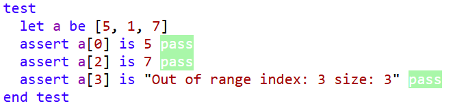
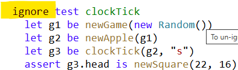

Symbols, Keywords, Constants, Methods and Types
Getting started
Technical platform
Demo programs
Changes and additions for Beta 6
Still to be implemented..
If you have programmed in another language, the key differences to be aware of…
The Elan editor – quick reference
Navigation – using the keyboard
Editing – using the keyboard
Mouse operation – quick reference
Instruction Set
Expressions
Literal value
Named value
Operator
Function call
Input/Output
Printing plain text to the Console
Print Html to the Console
Inputting data from the keyboard
Block graphics
Turtle graphics
Vector graphics
Reading keys ‘on the fly’
Reading textual data from a file
Writing textual data to a file
Procedural programming
Main routine
Defining named values
Conditions & selection
Loops & iteration
Function and procedures
Catching and throwing exceptions
Generating random numbers
Comments
Object-oriented programming
Class
Abstract class
Interface
Inheritance
Property
Function method
Procedure method
Functional programming
If expression
Higher order functions (HoFs)
Working with records
Generating random numbers within a function
Tests
Types
Int
Float
Boolean
String
Arrays and Lists
Dictionaries
Tuple
Func
Standard Library
Standalone functions
Standalone procedures
System methods
Standard data structures
Higher order functions (HoFs)
Dot methods that work on many different Types
Symbols, Keywords, Constants, Methods and Types
| Punctuation symbols recognised by Elan |
|---|
| ( ) |
brackets |
used in arithmetic or logical expressions, and to delimit parameters |
| [ ] |
square brackets |
used to delimit a literal Array or Dictionary, or for an index or
index-range
|
| { } |
curly braces |
used to delimit a literal List or DictionaryImmutable, or to define an ‘interpolated field’ within a literal String |
| . |
dot |
used to define fractional number, and to access a method or property using ‘dot syntax’ |
| .. |
double-dot |
used to define an index-range |
| , |
comma |
used to separate items in several different forms of list |
| : |
colon |
used to define a key-value pair in a literal Dictionary or DictionaryImmutable |
| + |
plus |
the addition operator |
| - |
minus |
the subtraction operator, or negation (unary) operator |
| * |
multiply |
the multiplication operator |
| / |
divide |
the division operator. Also used to delimit a literal Regular Expression (RegExp) |
| ^ |
caret |
raise-to-the-power-of operator |
| < |
less than |
comparison operator |
| > |
greater than |
comparison operator |
| <= |
less than or equal to |
comparison operator |
| >= |
greater than or equal to |
comparison operator |
| => |
fat arrow |
used in a lambda to signify ‘returns’ |
| _ |
underscore |
only punctuation symbol that may be used within an identifier (name), and can also be used to ‘discard’ elements when deconstructing a Tuple |
| " |
Double- quotes |
the delimiter for a literal String |
| # |
hash |
signifies a comment |
Keywords recognised by Elan
Colour key: keyword constant method Type
Note: ‘extension’ means that the function or procedure is called using ‘dot syntax’ on a value of the appropriate Type.
A
abs(number) – standalone function
abstract – keyword: see Abstract class
acos(value) – standalone function
acosDeg(value) – standalone function
and – keyword: see Logical operators
any(lambdaOrFunctionRef) – extension function
append(value) – extension procedure
appendArray(other) – extension procedure
as – used in a parameter definition: see Functions and procedures
asArray() – extension function
asBinary() – extension function
asin(value) – standalone function
asinDeg(value) – standalone function
asIterable() – extension function
asList() – extension function
asRegExp() – extension function
assert – keyword: see Tests
asSet() – extension function
asString() – extension function
asUnicode(character) – extension function
atan(value) – standalone function
atanDeg(value) – see more
B
BaseVG – Type
be – keyword: see Let statement
bitAnd(a, b) – standalone function
bitNot(a) – standalone function
bitOr(a, b) – standalone function
bitShiftL(a) – standalone function
bitShiftR(a) – standalone function
bitXor(a, b) – standalone function
black – constant (Int)
BlockGraphics – Type
blue – constant (Int)
brown – constant (Int)
C
call – keyword: see Procedure
catch – keyword: see Catching and throwing exceptions
ceiling(number) – extension function
CircleVG – Type
class – keyword, see Class
clearConsole() – standalone procedure
clearGraphics() – extension procedure
clearKeyBuffer() – extension procedure
clock() – standalone system method
closeBrace – constant (String)
constant – keyword, see Constant
constructor – keyword, see Class
contains(item) – extension function
copy – keyword, see Working with records
cos(radians) – standalone function
cosDeg(degrees) – standalone function
createArray(size, initialValue) – standalone function
createArray2D(columns, rows, initialValue) – standalone function
createFileForWriting(fileName) – standalone function
D
degToRad(degrees) – standalone function
div – keyword, see Arithmetic operators
E
each – keyword, see Each loop
ElanSet – Type
else – keyword, see If statement and If expression
empty – keyword, creates the empty value of a specified Type. See e.g. Arrays and Lists
end – keyword, (followed by another keyword) defines the end of a multi-line construct
enum – keyword, see Enum
exception – keyword, see Try statement and
exp(x) – standalone function
F
false – constant (Boolean)
filter(lambdaOrFunctionRef) – extension function
floor(number) – extension function
for – keyword, see For loop
from – keyword, see For loop
function – keyword, see Function and Passing a function as a referenc
G
getKey() – standalone system method
getKeyWithModifier() – standalone system method
global – keyword, see Scoping and name qualification
GraphicsBase – Type
green – constant (Int)
grey – constant (Int)
H
hasKey(key) – extension function
head() – extension function
I
if – keyword, see If statement and If expression
ignore – keyword, see Tests
import – (Not yet implemented)
in – keyword, see Each loop
indexOf(targetString) – extension function
indexOfItem(targetItem) – extension function
inherits – keyword, see Inheritance
inputFloat(prompt) – standalone system method
inputFloatBetween(prompt, minValue, maxValue) – standalone system method
inputInt(prompt) – standalone system method
inputIntBetween(prompt, minValue, maxValue) – standalone system method
inputString(prompt) – standalone system method
inputStringFromOptions(prompt, options) – standalone system method
inputStringWithLimits(prompt, minLength, maxLength) – standalone system method
insertAt(index, value) – extension procedure
interface – keyword, see Interface
is – keyword, see Equality testing
isAfter(other) – extension function
isAfterOrSameAs(other) – extension function
isBefore(other) – extension function
isBeforeOrSameAs(other) – extension function
isnt – keyword, see Equality testing
J
joinArrayElements(separator) – extension function
joinListElements(separator) – extension function
K
keys() – extension function
L
lambda – keyword, see Lambda
length() – extension function
let – keyword, see Let statement
– keyword, see Scoping and name qualification
LineVG – Type
log10(number) – standalone function
log2(number) – standalone function
logE(number) – standalone function
lowerCase() – extension function
M
main – keyword, see Main routine
map(lambdaOrFunctionRef) – extension function
max() – extension function
maxBy(lambdaOrFunctionRef) – extension function
min() – extension function
minBy(lambdaOrFunctionRef) – extension function
mod – keyword, see Arithmetic operators
N
new – keyword, see Using a class
not – keyword, see Logical operators
O
of – keyword, used to define Types of elements, see Arrays and Lists Dictionaries Func
openFileForReading() – standalone system method
openBrace – constant (String)
or – keyword, see Logical operators
out – keyword, see Parameter passing
P
parseAsFloat(string) – standalone function
parseAsInt(string) – standalone function
pause(milliseconds) – standalone procedure
pi – constant (Float)
prepend(other) – extension procedure
prependArray(other) – extension procedure
print – keyword, see Input/Output
printLine(text) – standalone procedure
printNoLine(text) – standalone procedure
printTab(position, text) – standalone procedure
private – keyword, see Object-oriented programming
procedure – keyword, see Functions and procedures
property – keyword, see Property
putAt(index, value) – extension procedure
putAt2D(column, row) – extension procedure
putAtKey(key, value) – extension procedure
Q
Queue – Type
quotes – constant (String)
R
radToDeg(radians) – standalone function
Random – Type
random() – standalone system method
randomInt(low, high) – standalone system method
range(start, end) – standalone function
record – keyword, see Working with records
RectangleVG – Type
red – constant (Int)
reduce(initialValue, lambdaOrFunctionRef) – extension function
ref – keyword, see Passing a function as a referenceRepeat loop
removeAll(value) – extension procedure
removeAt(index) – extension procedure
removeAtKey(key) – extension procedure
removeFirst(value) – extension procedure
repeat – keyword, see Repeat loop
replace(match, replacement) – extension function
return – keyword, last statement within a function – see Function
returns – keyword, defines the return Type in a function signature – see Function
round(number, decimalPlaces) – extension function
S
set – keyword, see Variables
Set – Type
sin(radians) – standalone function
sinDeg(degrees) – standalone function
sortBy(lambdaOrFunctionRef) – extension function
split(separator) – extension function
sqrt(number) – standalone function
Stack – Type
step – keyword, see For loop
T
tan(radians) – standalone function
tanDeg(degrees) – standalone function
test – keyword, see Tests
testRegExp(regExp) – extension function
TextFileReader – Type
TextFileWriter – Type
then – keyword, see If statement and If expression
this – keyword, see Object-oriented programming
throw – keyword, see Catching and throwing exceptions
to – keyword, see For loop
trim() – extension function
true – constant (Boolean)
try – keyword, see Catching and throwing exceptions
tuple –keyword, see Tuple
Turtle – Type
U
unicode(value) – standalone function
upperCase() – extension function
V
values() – extension function
variable – keyword, see Variables
VectorGraphics – Type
W, X, Y, Z
waitForAnyKey() – standalone procedure
while – keyword, see While loop
white – constant (Int)
with – keyword, see Working with records
withInsertAt(index, value) – extension function
withPutAt(index, value) – extension function
withPutAtKey(key, value) – extension function
withRemoveAll(value) – extension function
withRemoveAt(index) – extension function
withRemoveAtKey(key) – extension function
withRemoveFirst(value) – extension function
yellow – constant (Int)
Getting started
Technical platform
You can access the Elan Beta here.
Elan is designed to run within the Chrome browser; correct operation within other browsers is not guaranteed.
Demo programs
The Beta version includes a Demo button that offers a menu of demonstration programs which you can run:

The best way to get started with Elan is to explore these demo programs. You can edit any of them and save your own copy locally.
Changes and additions for Beta 6
Changes to language and standard library that could break existing code
Both the syntax and the layout for the following constructs have changed:
if statement. See If statement
try Statement. See Catching and throwing exceptions
The switch statement has been removed entirely. The improved if statement means that the switch statement no longer offered any advantages over using a series of else if clauses.
There have been significant changes to object-oriented programming, including:
For a concrete class, defining a constructor is now optional.
A concrete class may now inherit from only one abstract class.
An abstract class may now define both public and private concrete properties and methods (as well as abstract properties and methods).
Elan now has the concept of an interface – like an abstract class but defining only abstract members, and with the advantage that a concrete class may inherit from any number of interfaces (plus, optionally, one abstract class).
An abstract class cannot now inherit from another abstract class, but it may inherit from one or more interfaces.
Still to be implemented..
The following lists a few of the stand-out items that are not yet implemented. For a much longer list you are welcome to browse all the open items on our development project planning system on Github at: https://github.com/elan-languageAndIDE/issues. However, please bear in mind that those items are written by and for the development team, rather than for public discussion.
Editor
Debugger. Ability to insert breakpoints, pause, single-step, and read the state of variables.
Navigate directly from use of an identifier to its definition.
Renaming of identifiers (variables, constants, parameters, function and procedure names).
Profile configuration (exists as a proof of concept only at present). In future release you will be able to define multiple profiles and then assign a profile to each user name.
Ability to switch-on anti-plagiarism option (exists as a proof of concept only at present).
Ability to perform all navigation and actions by keyboard or mouse (except entering code into fields, which must be done through the keyboard).
If you have programmed in another language, the key differences to be aware of…
Types
Elan is a statically typed language. Basic Types are Int, Float, Boolean, and String. There are ready-made data structures as Types Array, List, Dictionary. Elan supports user-defined classes and enums, and there are several ready-made classes in the standard library such as BlockGraphics, File, Set, Stack, Queue, Tree, Graph … (only the first of these is in the Beta 6).
Variables
Variables are defined by the variable statement, and re-assigned with a set statement.
Variable names (indeed all names in Elan) must begin with a lower-case letter.
Variables must be initialised with a literal value or an expression that yields a value, and the Type of that value determines the Type of the variable.
There is no such thing as a global variable in Elan. Variables are defined within main, or within a function or procedure and are visible only within that scope.
Constants
A constant is only ever defined at global level and is set to a literal value of an immutable Type: for example any of the four basic Types or a List, but not an Array (see below).
Let statement
A let statement may be thought of as being between a constant and a variable. Like a variable a let may be defined only within a routine, but unlike a variable it may not be re-assigned once defined. It is recommended that you always use a let in preference to a variable unless you need to be able to assign a new value to it.
Arrays
An Array is a mutable data structure – as it is in most languages.
It may be initialised to a specific size, with each element set to an initial value (e.g. 0 for an Int or Float), but it may also be extended dynamically with the append and prepend methods.
A 2D Array may also be created, accessed with a double index e.g. a[2][3]. See also 2-dimensional Array.
Testing for equality
Elan tests for equality by value (not equality by reference) using the keywords is (for example if x is y) and isnt. The comparisons, >, <. >=, <= apply to numeric Types (Int and Float) only. (There are methods for String comparison – see Dot methods on a String )
Methods
There are several types of method in Elan: standalone function, standalone procedure, instance function and instance procedure (both defined on a class), and system methods. These are expanded on below.
Elan does not support overloaded method names (methods with the same name, but different number or Type of parameters). Every free-standing method must have a unique name distinct also from those in the standard library. Instance methods must be unique within a class, though the same name may be used within different classes.
Function
An Elan function (whether standalone or an instance method on a class) must be a pure function. That is, it must return a value that is derived, solely and deterministically, from the arguments supplied as parameters. A function contains one, and only one, return statement which must be the last (or only) statement in the function body.
A function may not generate side-effects, for example it may not:
Contain any print statements
Use any system method within its expressions
Make a call to any procedure (since procedures are not pure)
Assign to or mutate any parameter
Procedure
An Elan procedure may be thought of as a ‘command’. Like a function it may define parameters but it does not return a value. This is because a procedure necessarily makes changes: changes to one or more of the parameters (if the parameter definition is prefixed by out), and/or changes to the system by calling print or any of the system methods.
A procedure exits after executing the last statement in the body. There is (deliberately) no mechanism to exit ‘early’, thereby enforcing structured programming.
A procedure is always executed via a call statement, either standalone, or as a ‘dot method’ on a named instance.
System method
System methods are all defined as part of the standard Elan library. Some are like procedures, returning no value, and are hence executed via the call statement. Others are similar to functions in that they return a value and are evaluated within an expression. However, unlike functions these system methods either have side-effects or external dependencies (or both). For that reason, no system method – whether resembling a procedure or a function – may be used within a user-defined function (or within a test). They may only be used within main or within a procedure.
Object-oriented techniques
The name given to a class must follow the rules for any Type name i.e. it must start with an upper-case letter.
Every (concrete) class has a constructor, which is automatically added when you define a class. But it is not essential to define any code within that constructor.
A property may be assigned (set) a new value within the constructor, or within a procedure method defined on the class or the sub-class. But a property may never be assigned by code outside the class. If you require this capability, you can write your own procedure methods (commonly called ‘setter’ methods) to do this. A function method may read properties, but not write to them.
Whenever you wish to access a property from within a method (or from within the constructor) on the same class, then the name of the property must be prefixed with the ‘qualifier’ property. (‘property-dot’). This applies whether you are reading or setting the property. By this means you can have a method parameter with the same name as a property, but they are unambiguous because the property must be prefixed. A common pattern is to use the same name in a ‘setter’ method, for example:
procedure setName(name as String)
set property.name to name
end procedure
The property. qualifier is neither required, nor allowed, when accessing a property on an instance of the class, because the instance name acts as the qualifier.
A concrete class may inherit from one or more abstract classes, but may not inherit from another concrete class. This enforces the widely-recognised OOP design principle that ‘all classes should be abstract or final (not inheritable)’.
An abstract class may define abstract members (property, function, procedure), which must always be implemented by any concrete sub-class. It may also define private members (property, function, procedure), which are visible to any concrete sub-class, but not visible from code outside the class hierarchy.
Functional techniques
Elan has strong support for the functional programming paradigm, building on the foundation of its rigorous definition of a function. In addition:
The standard library defines several ‘higher-order functions’ (HoFs) including map, filter and reduce that apply to any Type that is ‘iterable’ (including String, Array and List).
Any user-defined or standard library function may be passed as an argument into a parameter, or associated with a name using a variable or let statement, by preceding the name of the function with the keyword function.
You may also define a lambda, inline as an argument in a function call, or assigned to a named value.
Although pure functions, including HoFs, may work with mutable data structures (without actually mutating them), immutable data structures are considered a better fit for functional programming. Elan provides many immutable standard data structures, including String (immutable in most languages) and List (in contrast to many languages), and record which is like an immutable form of a class without encapsulated methods.
The Elan editor
– quick reference
Navigation – using the keyboard
Note: For Apple Mac users: commands use of the Ctrl key in this reference, should be replaced by the macOS Cmd key.
| Keystroke |
On a selected Frame |
On a selected Field |
|---|
| Home |
First peer-level frame. |
Move text cursor to start of field. |
| End |
Last peer-level frame. |
Move text cursor to end of field. |
| Tab |
First field in frame. |
Select next field within frame or, if from last field in a frame, select the frame itself.
(If the field has a selected option in the auto-complete popup list then Tab will use that option – the same as Enter)
|
| >↑ |
Select previous frame
(within peer-level only).
|
Select previous frame
(in tab order).
|
| ↓ |
Select next frame
(within peer-level only).
|
Select next frame
(in tab order).
|
| ← |
Select parent frame (if any). |
Move text cursor left within field. |
| → |
Select first child frame (if any). |
Move text cursor right within field. |
| Shift-↑ |
Add prev. frame (peer-level) to current selection. |
If auto-complete options are offered (drop-down list), move the selection down one in the list. (See also Enter) |
| Shift-↓ |
Add next frame (peer-level) to current selection. |
If auto-complete options are offered (drop-down list), move the selection up one in the list. (See also Enter) |
| Esc |
Escape from the code editor, and put focus on the first Button in the IDE |
| Ctrl-o |
Toggle (expand/collapse) outlining on selected frame. |
Toggle (expand/collapse) outlining on the frame enclosing this field. |
Ctrl-O
(Ctrl-Shift-o)
|
Toggle (expand/collapse) outlining on all frames. |
Toggle (expand/collapse) outlining on all frames. |
Editing – using the keyboard
| Keystroke |
On a selected Frame |
On a selected Field |
|---|
| Alt-t |
Remove all ‘new code’ selections that can be removed.
This is equivalent to clicking on the Trim button.
(This cannot be Ctrl-t as that is defined and executed by the browser).
|
| Backspace |
On any ‘new code’ selector: delete the selector. (Note that all ‘new code’ selectors can be removed with the +/- button above the code pane).
On a new, unmodified, frame, or from any unedited field within that new frame: delete the whole frame and go back to the selector. This capability is to facilitate deleting a frame created unintentionally. As soon as any field has been edited, or any child frame added – the frame can only be deleted using Ctrl-Delete (see below).
|
Delete character to the left of the cursor. |
| Delete |
|
Delete the character to the right of the cursor. |
Ctrl-Delete or
Ctrl-d
|
Delete the selected frame, including any frames within it. |
|
| Enter |
Insert a selector-frame (‘new code’) below selected, at peer level – if permissible. |
If auto-complete options are offered (as a drop-down list), enter the selected option into the field.
Otherwise, move to the next field (in the same frame) – like Tab.
For last field in frame only: insert ‘new code’ after this field.
|
| Shift-Enter |
Insert a selector-frame (‘new code’) above selected, at peer level – if permissible |
- |
| Ctrl- _ |
Move selected frame(s) up, within peer level. |
- |
| Ctrl- _ |
Move selected frame(s) down, within peer level. |
- |
| Ctrl- _ |
|
Move the cursor to the end of the next ‘word’ or other transition |
| Ctrl- _ |
|
Move the cursor to the end of the next ‘word’ or other transition |
| Ctrl-x |
Cut selected frame(s) into the scratchpad |
Cut any selected text from the field |
| Ctrl-v |
- |
Paste text from the clipboard into the field, at the cursor.
On a selected ‘new code’ field: Paste the frame(s) added to the scratchpad in place of the ‘new code’ field. If any of the frames to be added is not compatible with the content of the ‘new code’ field then no action will take place.
|
| Ctrl-z |
Undo last edit
Takes you back to the next most recent version that parsed successfully.
Any changes made that did not result in a successful parse will be lost.
|
|
| Ctrl-y |
Redo last undo
provided that the code you undid from was parsing successfully
|
|
| Ctrl-p |
Toggle the private status of members property, function or procedure of a class |
|
| Ctrl-i |
Toggle the ignore setting of a test |
|
Mouse operation – quick reference
To select a frame, click on the keyword at the start the frame. (You can successfully click in several other places within the frame, but the simplest rule to remember is click on the starting keyword).
To select an additional frame (‘multi-select’), hold down the Shift key on the keyboard and click on the frame to add to the current selection. Note that all the multi-selected frames must be at peer-level (the same level of indentation) and, unless global frames, must be within the same ‘parent’ frame.
To select a field, click on the text (or, if empty, the prompt) shown for that field. Having selected the field, you may then click again at a particular place within the text to position the text cursor. (By default, when a field is selected the text cursor will be at the right-hand end of any existing text).
To collapse a multi-line frame, double-click on the keyword at the start of the frame
To expand a collapsed frame, double-click on the keyword at the start of the frame (or the ‘+’ symbol in front of it).
NOT YET IMPLEMENTED
To move selected frame, or frames, up or down within the same peer level hold down the Ctrl key and drag the mouse, or move the scroll wheel
Scrolling of options within the ‘autocomplete’ popup using the mouse wheel.
Instruction Set
This section defines the set of instructions that make up the Elan language, and which form the building blocks for any program.
There are three categories of instruction, which are distinguished where the instructions of that categeory are located within a program:
Global instructions (also referred to simply as 'globals') are located directly within a code file.
They are never indented from the left-hand edge, nor may they be located within other instructions.
Three of the globals - main, function, and procedure - are described as 'methods' and these defined one or more statements within them.
Four of the globals -
record,
class,
abstract class, and
interface - define data structures and these always contain
members.
The two remaining globals - constant, and enum - do not contain any further instructions.
Member instructions (also referred to simply as 'members') are located directly within the 'data structure' globals: record, class, abstract class, interface.
All members with the exception of property, define one or more statements within them.
Statement instructions (also referred to simply as 'statements) are located within 'methods.
Some of these statements may contain other statements.
All instructions are added into a program using the new code 'selectors'.
A comment is not an instruction: it will be ignored by the compiler and does not change how the program works.
Rather, a comment contains information
about the program, intended to be read by a person seeking to understand or modify the program.
Every comment starts with the symbol
# (known as 'hash') followed by some text or a blank line.
Comments can be inserted by a programmer at the same level as a
global,
member, or
statement instruction, by entering
# from the
new code selector.
Every Elan program has a single comment at the top of the file, which is generated by the system and may not be edited or deleted by the user.
This comment is known as the 'header' and gives the version of Elan being run, together with other optional information depending upon your user profile.
Global Instructions
When you navigate to a new code that is at global level (not indented from the left-hand edge of the code pane)
you will be shown the set of globals that may be inserted there, for example:
new code main procedure function test constant enum record class abstract interface #
The specific globals offered will depend upon your user profile. The full set of globals is shown here with links to explanations below:
main,
procedure,
function,
test,
constant,
enum,
record,
class,
abstract (in this context, short for
abstract class),
interface
#,
Main
note that option disappears once used
Procedure
Function
Test
Constant
Enum
Record
Class
Abstract Class
Interface
Member Instructions
When you navigate to a new code that is at member level
(located directly within a record, class, abstract class, or interface)
you will be shown the set of statements that may be inserted there, for example:
new code constructor function procedure property private... #
The specific members offered will depend upon the context, and/or upon your user profile.
The full set of entries is shown here, with links to explanations below:
constructor,
property,
procedure,
function,
abstract property,
abstract procedure,
abstract function,
private property,
private procedure,
private function,
#,
Constructor
Property
Procedure Method
Function Method
Abstract Property
Abstract Procedure Method
Abstract Function Method
Statement Instructions
When you navigate to a new code that is at statement level
(located within a global or a member instruction)
you will be shown the set of statements that may be inserted there, for example:
new code call each for if let print repeat set throw try variable while #
The specific statements offered will depend upon the context, and/or upon your user profile.
The full set of entries is shown here, with links to explanations below:
assert
call
each
else
for
if
let
print
repeat
set
throw
try
variable
while
#
Assert statement
Procedure Call
Each loop
Else clause
For loop
If statement
Let statement
Print statement
Repeat loop
Set statement
Throw statement
Try statement
Variable statement
While loop
Expressions
One of the most important constructs in programming is the ‘expression’. An expression is evaluated to return a value. An expression is made up of the following possible elements:
Literal value
Named value
Operator (including brackets)
Function call
which this chapter describes.
Literal value
A literal value is where a value is written ‘literally’ in the code, such as 3.142 – in contrast to a value that is referred to by a name.
The following data Types may be written as literal values (follow the links to view the form of each literal value):
Int, Float, Boolean, String, Array, List, Dictionary, DictionaryImmutable, Tuple
Named value
A named value is a value that is associated with a name rather than being defined literally in code. There are various kinds of named value:
Constant, let statement, variable statement, Parameter passing, enum statement
Identifier
For all kinds of named values, the name must follow the rules for an ‘identifier’. It must start with a lower-case letter, followed by any combination of lower-case and upper-case letters, numeric digits, and the _ (underscore) symbol. It may not contain spaces or other symbols. Once a named value has been defined, it can be referred to by the name.
Scoping and name qualification
With the exception of a constant (below), which is global in scope, named values are always ‘local’: their scope is confined to the method in which they are defined.
Elan allows local named values to be defined with the same name as a constant, function, or procedure defined at global level or defined in the standard library. In such cases, when the name is used within the same method, then it will refer to the local definition. If you have done this, but then need to access the constant, function, or procedure with the same name, then you can simply prefix the use of the name with a ‘qualifier’ of either global. or library. as appropriate.
Indexed Value
If a variable is of an indexable Type, then an index or index range may be applied to the variable within an expression. For example:
variable a set to "Hello World!"
print a[4]
print a[4..]
print a[..5]
print a[0..4]
See also: Using an Array, Using a Dictionary
Important: unlike in many languages, indexes in Elan (whether, single, multiple, or a range) are only ever used for reading values. Writing a value to a specific index location is done through a method such as:
putAt on an Array
withPutAt on a List
putAtKey on a Dictionary
withPutAtKey on a DictionaryImmutable
Enum
An enum – short for ‘enumeration’ – is the simplest form of ‘user-defined Type’. It specifies a set of values, each of which is defined as a name, such that a variable of Type enum must always hold one of those values.
Type name
The name given to an enum (see below), which must begin with an upper-case letter, is used as the Type name when passing a value to or from a procedure or function.
Defining an enum
For example, this enum defines the possible String values of Status:
enum Status incomplete, ready, running, stopped, invalid
and this defines the possible String values of Suit:
enum Suit clubs, diamonds, hearts, spades
Using an enum
The value is specified by the Type name for the specified enum, followed by a dot and the value name, for example:
variable x set to Status.ready
Note
enums are read-only: once they have been defined it is not possible to add, remove, or update their values.
Operator
Arithmetic operators
Arithmetic operators can be applied to Float or Int arguments, but the result is always a Float:
2^3 gives 8
2/3 gives 0.666..
2*3 gives 6
2 + 3 gives 5
2 - 3 gives -1<br>
11 mod 3 gives 2 (integer remainder)
11 div 3 gives 3 (integer division)
Arithmetic operators follow the conventional rules for precedence i.e. ‘BIDMAS’ (or ‘BODMAS’)
Note: When combining div or mod with any other operators within an expression, insert brackets to avoid ambiguity e.g.:
(5 + 6) mod 3
The minus sign may also be used as a unary operator, and this takes precedence over binary operators so:
2*-3 _ -6
Note that the Elan editor automatically puts spaces around the + and – binary operators, but not around ^, / or *. This is just to visually reinforce the precedence.
Logical operators
Logical operators are applied to Boolean arguments and return a Boolean result.
and and or are binary operators
not is a unary operator.
The operator precedence is not → and → or.
Example that implements an ‘exclusive or’.
function xor(a as Boolean, b as Boolean) returns Boolean
return a and not b or b and not a
end Function
Equality testing
Equality testing uses the is and isnt keywords with two arguments. The arguments may be of any Type.
a is b returns true, if a and b are both of the same Type and their values are equal. The only exception is that if one argument is of Type Float and the other is of Type Int, then is will return true if their values are the same, i.e. are the same whole number.
isnt returns the opposite of is
Note that in Elan equality testing is always ‘equality by value’; there is no such thing as ‘equality by reference’.
Note
Where a binary operator is expected, as soon as you type is the editor will automatically insert a space after it. To enter isnt you need to delete the space (using the Backspace key) and then type nt.
Numeric comparison
The numeric comparison operators are:
> for greater than
< for less than
>= for greater than or equal to
<= for less than or equal to
Each is applied to two arguments of Type Float, but any variable or expression that evaluates to an Int may always be used where a Float is expected.
Notes
These operators cannot be applied to strings. Use the dot methods isBefore and isAfter to compare strings alphabetically. See Dot methods on a String.
Where a binary operator is expected, as soon as you type < or > the editor will automatically insert a space after it. To enter <= or >= you need to delete the space (using the Backspace key) and then type =.
Combining operators
You can combine operators of different kinds, e.g. combining numeric comparison with logical operators in a single expression. However the rules of precedence between operators of different kinds are complex. It is strongly recommend that you always use brackets to disambiguate such expressions, for example:
(a > b) and (b < c)
(a + b) > (c -d)
Function call
An expression may simply be a function call, or it may include one or more function calls within it. Examples:
print sinDeg(30)
variable x set to sinDeg(30)^2 + cosDeg(30)^2
variable name set to inputString("Your name")
print name.upperCase()
Notes
The third example above is not strictly a function call, but is a ‘system method’Error! Reference source not found. call. System methods may only be used within the Main routine or a Functions and procedure, because they have external dependencies or side effects.
In the fourth example, upperCase is a ‘dot method’ that may be applied to any instance (variable or literal) of Type String. See Dot methods on a String.
All forms of input/output involve dependencies on, or make changes to, the system. Therefore they may only be used within either the main or a procedure.
Printing plain text to the Console
Explanatory YouTube video: Elan input/output 1 - Printing to the Console
The simplest way to print is with the print statement. For example
print "Hello"
let a be 3
let b be 4
print a * b
print "{a} times {b} equals {a*b}"
Note
The last line in the example above uses an ‘interpolated string’. Arguments placed within curly braces are evaluated before printing, and these may be separated by literal text and punctuation as needed. This is one recommended way to print more than one value on a line. The other way is to use print procedures.
print procedures
If you wish to have more control over printing then, as an alternative to using a print statement, you may call any of these three standard library procedures:
printLine(arg as String)
printNoLine(arg as String)
printTab(tabPosition as Int, arg as String)
for example:
for i from 1 to 10 step 1
call printNoLine("{i}")
end for
Notes
For all three methods, the item to be printed must be a String , but you can convert other Types into a String by using the dot method .asString()
printLine prints the item with a newline afterwards, in the same way that the ordinary print statement does. (The only purpose of having this procedure is so that you may choose to do all printing via these methods rather than mixing them in with print statements).
printNoLine does not automatically add a newline at the end, so you may subsequently print something else on the same line (unless you choose to include a newline \n within the string).
printTab helps in the layout of information printed to the console, in particular, when printing columns of data. printTab requires an additional argument specifying the tab position which is number of characters from the left of the display. For example:
call printTab(0, "No.")
call printTab(10, "Square")
call printTab(20, "Cube\n")
for x from 1 to 10 step 1
call printTab(0, x.asString()
call printTab(10, "{x^2}")
call printTab(20, "{x^3}\n")
end for
or, to right-align numeric output:
variable tab set to 10
variable i set to 0
for i from 1 to (tab – 1) step 1
variable j set to 10^i
call printTab(tab - digits(j), "{j}\n")
function digits(number as Int) returns Int
return number.asString().length()
end function
Print Html to the Console
As well as plain text, it is also possible to print Html to the console, which will be correctly formatted. For example:
print "<h1 style='color: blue;'>A heading</h1>"
print "<p>some text</p>"
Will produce:

Notes
For specifying style or other attributes within Html tags, the attribute values should be enclosed in single quotation marks ' as shown. Html will recognise single or double quotation marks, but entering double quotation marks would terminate the Elan string. Alternatively, you could replace each ' by the interpolated constant {quotes}.
It is not necessary to put individual lines of Html into separate print statements – you can print a string of any length – but putting tags into separate print statements can improve the readability of your code.
Using an embedded stylesheet
If you want styles to be applied to multiple tags you can embed a stylesheet. For example, the following stylesheet will set the font for all text, and some further details for all <h1> headings:
<style>
h1 {
color: blue;
font-size: 24pt;
}
p {
font-family: Helvetica;
}
</style>
This may be safely coalesced into a single line and many spaces removed:
<style>h1{color:blue;font-size:24pt;}p{font-family:Helvetica;}</style>
The only problem is with the curly braces {} since within a literal string Elan will interpret these as defining an ‘interpolation’ clause (see Interpolated string). This can best be overcome by using the interpolated constants {openBrace} and {closeBrace} instead of { and }:
main
let stylesheet be "<style>h1{openBrace}color:blue;font-size:24pt;{closeBrace}p{openBrace}font-family:Helvetica;{closeBrace}</style>"
print stylesheet
print "<h1>A heading</h1>"
print "<p>plain text</p>"
end main
Here is the result:

Alternatively you could put, say, [ and ] in the original Html stylesheet instead of { and }, and use a function to replace the square brackets with curly braces (defined by their Unicode codepoint values) before use, and get the same result:
main
let stylesheet be "<style> h1[color:blue;font-size:24pt;],p[font-family:Helvetica;] h1</style>"
print replaceBrackets(stylesheet)
print "<h1>A heading</h1>"
print "<p>plain text</p>"
end main
function replaceBrackets(original as String) returns String
return original.replace("[", unicode(123)).replace("]", unicode(125))
end function
Notes
If you define an embedded stylesheet in the manner described above, then this should be printed first, and will then be applied to any subsequent printing of Html within the program. However …
If the console is cleared, either by the Clear button on the UI, or by programmatically using call clearConsole(), then the stylesheet will be removed also. You can, though, print the stylesheet again before printing further content. In this case it can be a good idea to define the stylesheet as a (global) constant.
In general you should avoid using * to define the applicability of a style, since this could mess up the styling of the Elan IDE, and even render it unusable. (Should this happen, refresh the browser and correct the stylesheet definition). If you want a style to apply to all elements that you are printing you may specify #console *, which means ‘all elements within the element with id = 'console'
Beware printing strings with < and > in them in case they enclose non-blank characters since Elan will try and interpret the enclosed characters as an Html tag.
Inputting data from the keyboard
Explanatory YouTube video: Elan input/output 2 - input from the keyboard
Also the readKey system method on BlockGraphics
Block graphics
Block graphics provides a simple way to create low resolution graphics, ideal for simple but engaging games for example. The graphics are displayed on a grid that is 40 blocks wide by 30 blocks high.
Each block may be rendered as a solid colour. Each block may alternatively hold a symbol: either one of the standard text characters or any Unicode symbol and, in each case, with specified foreground and background colours. For specifying colours, see Colour.
An example of block graphics to produce a rapidly changing pattern of coloured blocks:
+main1
variable grname? set to new BlockGraphics()expression?2
+while truecondition?3
let xname? be randomInt(0, 39)expression?4
let yname? be randomInt(0, 29)expression?5
let colourname? be randomInt(0, 2^24 - 1)expression?6
set grvariableName? to gr.withBlock(x, y, colour)expression?7
call gr.displayprocedureName?(arguments?)8
end while
end main
Notes
Making changes to the instance of BlockGraphics (gr above) – for example by calling withBlock above – does not of itself result in anything appearing in the Graphics screen. The Graphics screen changes only when the display() procedure is called. This is so that you can make many changes to the graphics and then have them appear all at once (when display is called). It is even possible to create and modify, multiple instances of BlockGraphics, and switch instantly between them by calling display on different instances.
The coordinates must be in the range 0-39 for a column, and 0-29 for a row. Using values outside this range will result in a runtime error.
Colour is always specified as an integer: see Colour.
The withBlock method does not change the instance of BlockGraphics on which it is called, but returns a new instance of BlockGraphics based on the original with the change specified. This new instance may, however, be re-assigned to the same variable – as is the case in the code above.
In addition to withBlock, there are these three function methods for updating the graphics:
withText(x as Int, y as Int, text as String, foreground as Int, background as Int) returns BlockGraphics
If the text argument is more than one character long, the characters will be placed in successive blocks, wrapping onto the next line if necessary. (If the string is too long to fit, from the starting coordinates specified, you will get a runtime error). Use only ASCII characters with values in the range 32 space) through 254 lower-case thorn).
withUnicode(x as Int, y as Int, unicode as Int, foreground as Int, background as Int) returns BlockGraphics
is used to specify a single symbol or character using its Unicode codepoint value.
withBackground(backgroundColour as Int) returns BlockGraphics
will paint the background colour for the whole grid, leaving any existing characters (and their foreground colours) unchanged.
There are also function methods on a BlockGraphics instance for reading the existing character and colours of a specified block:
getChar(x as Int, y as Int) returns String
getForeground(x as Int, y as Int) returns Int
getBackground x as Int, y as Int) returns Int
Turtle graphics
Example code:
main
let t be new Turtle()
call t.show()
for i from 1 to 4 step 1
call t.turn(90)
call t.move(100)
call t.pause(500)
end for
end main
Output:

Notes
move and turn are the two most commonly-used methods. To move backwards, specify a negative value. The value passed into turn is interpreted as degrees: a positive value turns clockwise; a negative value anti-clockwise. Both methods take a numeric value, which may be an Int or a Float.
Scaling: the argument provided to the move procedure is specified in ‘turtle-units’. The Graphics pane on the screen (i.e. the ‘paper’ on which the Turtle draws) is 100 turtle units wide by 75 turtle units high. If the turtle is moved outside these boundaries it will not cause an error, but the location of the turtle and any lines outside the boundaries will not be visible.
show causes the turtle to be displayed (the small green circle with a black radius showing the direction it is pointing); hide does the opposite. You can move and turn the turtle, causing lines to be drawn, whether or not the turtle is shown.
To move the turtle without drawing a line call penUp, then penDown when you are ready to draw lines again.
penColour takes an integer argument specifying the colour. For specifying colours, see Colour.
penWidth specifies the width of the line drawn by the turtle which must be an integer. The default is the minimum value of 1.
You can specify the start position of the turtle in x,y coordinates (0,0 being the top-left of the Graphics pane) with placeAt, which may also be used to reposition the turtle (without drawing a connecting line) during the program run. You may specify the turtle’s absolute heading with turnTo, where 0 would cause the turtle to face up the screen.
The current location and heading of the turtle may be read using the x, y, and heading properties.
There is no difference in effect between call t.pause(500) and the standalone call pause(500): the former option is provided as a convenience, because most instructions in a Turtle program take the form call t.something. Both versions take an integer argument, being the length of the pause in milliseconds.
Apart from the penColour and pause methods, both of which require an integer value, all other procedure methods on the Turtle can take integer or floating-point values.
Here is a more sophisticated example, using a procedure and recursion, that produces a fractal snowflake:
main
variable t set to new Turtle()
call t.placeAt(10, 60)
call t.turn(90)
call t.show()
for i from 1 to 3 step 1
call drawSide(160, t)
call t.turn(120)
end for
end main
procedure drawSide(length as Float, out t as Turtle)
if (length > 3) then
let third be length/3
call drawSide(third, t)
call t.turn(-60)
call drawSide(third, t)
call t.turn(120)
call drawSide(third, t)
call t.turn(-60)
call drawSide(third, t)
else
call t.move(length)
end if
end procedure

Vector graphics
Example:
main
variable vg set to new VectorGraphics()
let circ be new CircleVG() with cx to 35, cy to 35, r to 5, stroke to red, strokeWidth to 2, fill to green
set vg to vg.add(circ)
call vg.display()
end main
Output:

Notes
Elan vector graphics are displayed using SVG (Scalable Vector Graphics) that are a part of the Html specification. The names of the shapes broadly correspond to the names of SVG tags: CircleVG for <circle../>, LineVG for <line../>, and RectangleVG for <rect../>. The properties of the Elan VG shapes match the names of the attributes used in the SVG tags, except that the stroke-width attribute is changed to strokeWidth to make it a valid Identifier.
The ‘canvas’ on which vector graphics are drawn (the Graphics pane in the user interface) is 100 units wide, by 75 units high .All numeric values specified for attributes of vector graphic shapes may be integer or floating point.
All Elan ..VG shapes have default values for all attributes, and so will show up even if no attributes have been specified. You can specify as many of the attributes as you wish when creating the shape using the new .. with syntax, as shown in the example above.
As with Block graphics the screen is not updated until the display method is called, allowing you to make multiple changes before updating the screen. Similarly, the method to add a shape returns a new instance of the VectorGraphics which must be assigned either to an existing variable, or to a new let.
As with the way that SVG works within Html, the shapes are drawn in the order in which they are added into the VectorGraphics instance, with later shapes positioned over earlier shapes.
The colour (for stroke and fill properties) may be specified as described at Colour. The fill colour only may also be specified as ‘transparent’ by giving it a negative value; we suggest using fill to -1
VectorGraphics also has methods removeLast (no parameters), remove (which takes a shape as a parameter, and replace which takes an existing shape and a new shape as parameters. The new shape may be a modified version of an existing shape (created using copy .. with), thereby enabling animation. The following simple example creates a circle that changes between red and green every second:
main
variable vg set to new VectorGraphics()
let greenCirc be new CircleVG() with cx to 50, cy to 37, r to 30, fill to green
let redCirc be copy greenCirc with fill to red
set vg to vg.add(greenCirc)
while true
call vg.display()
call pause(1000)
set vg to vg.replace(greenCirc, redCirc)
call vg.display()
call pause(1000)
set vg to vg.replace(redCirc, greenCirc)
end while
end main
Colour
Where a colour can be specified, it is a value of Type Int in the range
0 – 16,777,215 (i.e. 0 to 224 -1, expressable as 24-bit binary number).
As in Html, a colour number is made up of the values from 0 to 255 for each of the three components: red (R), green (G) and blue (B). So a colour value may be described by its integer value, or by three decimal values (R, G, B), or by a 6-digit hexadecimal number (0xrrggbb).
Elan has a small number of standard named colours:
Integer
decimal
|
R G B
decimal
|
R G B
hexadecimal
|
Colour
name
|
|---|
| 0 |
0 0 0 |
0x000000 |
black |
| 16777215 |
255 255 255 |
0xffffff |
white |
| 16711680 |
255 0 0 |
0xff0000 |
red |
| 32768 |
0 128 0 |
0x008000 |
green |
| 255 |
0 0 255 |
0x0000ff |
blue |
| 16776960 |
255 255 0 |
0xffff00 |
yellow |
| 10824234 |
165 42 42 |
0xa52a2a |
brown |
| 8421504 |
128 128 128 |
0x808080 |
grey |
You can use these colour names directly in an Int. If you want to define other colours, you put any of the 16,777,215 colour numbers into literals, constants or variables either as a decimal integer or, more conveniently, in the hexadecimal form shown in the table. For example you might define lightBlue and deepPink using these hex values:
| 8421504 |
128 171 255 |
0x80abff |
lightBlue |
|---|
| 16206720 |
247 75 128 |
0xf74b80 |
deepPink |
and then use a variable or a constant to hold those values:
variable lightBlue set to 0x80abff
constant deepPink set to 0xf74b80
Note that in Elan code a hexadecimal colour value is preceded by 0x, whereas in an Html stylesheet it is preceded by #. Also, the standard colour names may not correspond exactly.
Reading keys ‘on the fly’
In some applications – especially in games, for example – you want the program to react to a key pressed by the user, but without holding up the program to wait for value to be input.
Whether your application makes use graphics, or just uses the Console for text, reading keystrokes ‘on the fly’ is done via one of two methods:
let key be getKey()
let key, modifier be getKeyWithModifier()
Notes
When the getKey is called, the system does not wait for a response. If a key has been pressed then that will be returned as a String e.g. "a".
Non-printable keys will be returned in the form: "Backspace","Enter","ArrowDown",..
If no key has been pressed (since the last time the method was called), it will return the empty string "".
Pressing just the Shift, Ctrl (Cmd under macOS), or Alt keys will not be detected by getKey. To read those keys use…
getKeyWithModifier which returns a 2-tuple containing the key pressed plus any ‘modifier’ key such a Shift, Ctrl, or Alt (or the empty string if no modifier key is pressed).
Both of these getKey methods are System methods because they have a dependency on the system and so may only be used within a procedure or in main.
Use the procedure method clearKeyBuffer() if you want to enforce that the user cannot get too far ahead of the program by hitting keys in very rapid succession.
waitForAnyKey
pauses the execution of the program until the user presses any single key. The identity of the key is not captured though. Example of use:
print "Press any key to continue.."expression?2
call waitForAnyKeyprocedureName?(?)3
call clearConsoleprocedureName?(?)4
print "Next page"expression?5
Reading textual data from a file
Reading a whole file in one go:
let filename? be openFileForReading()expression?2
let textname? be file.readWholeFile()expression?3
call file.closeprocedureName?(arguments?)4
print textexpression?5
Reading a file line by line:
+main1
let filename? be openFileForReading()expression?2
variable linesname? set to empty Array<of String>expression?3
+while not file.endOfFile()condition?4
let linename? be file.readLine()expression?5
call lines.appendprocedureName?(linearguments?)6
end while
call file.closeprocedureName?(arguments?)7
Notes
openFileForReading will present the user with a dialog to select the file.
readWholeFile returns a String containing every character in the file, without any trimming. It automatically closes the file after the read.
readLine reads as far as the next newline character (\n) and then automatically trims the line to remove any spaces and/or carriage-returns (which some file systems insert after the newline automatically) from the resulting line returned as a String. If this behaviour is not desired, you can use readWholeFile, which does no trimming, and then parse the resulting String into separate lines.
Calling file.close() after reading line by line is strongly recommended to avoid any risk of leaving the file locked. It is not necessary to call it after using readWholeFile() because that method automatically closes the file.
Calling any method on a file that is already closed will result in a runtime error.
Writing textual data to a file
Writing a whole file in one go:
let fname? be createFileForWriting("myFile.txt")expression?2
call f.writeWholeFileprocedureName?("this is\nmyText"arguments?)3
Writing a file line by line:
+main1
let filename? be createFileForWriting("squares.txt")expression?2
+for ivariableName? from 1expression? to 100expression? step 1expression?3
call file.writeLineprocedureName?("{i} {i*i}"arguments?)4
end for
call file.saveAndCloseprocedureName?(arguments?)5
end main
Notes
writeLine adds the string it is passed onto the end of any data previously written, with a newline character (\n) automatically appended.
When execution reaches saveAndClose() you will be presented with a dialog to confirm (or edit) the given filename and location where it is to be saved. It is not therefore strictly necessary to specify a filename when creating the file, since it can be specified by the user in the dialog so, in that case, you might put the empty string "" into the parameter of createFileForWriting.
writeWholeFile puts the string it is given into the file and then automatically saves the file, so the user will be presented with the same dialog as if saveAndClose had been called.
Calling any method on a file that has already been closed (by calling either saveAndClose or by writeWholeFile) will result in a runtime error.
If the user were to hit Cancel on the save dialog, then the program will exit with an error. If you want to guard against this possibility (if, for example, it might mean the loss of important data) then you should perform the save and close within a try..catch like this:
+try 3
call file.saveAndCloseprocedureName?(arguments?)4
+catch exception in evariableName?5
print "File save cancelled"expression?6
end try
or you could make the code offer the user options: to save again, or to continue without saving.
Procedural programming
Main routine
Explanatory YouTube video: Elan language constructs 1 - main routine
A file must have a main method if it is intended to be run as program. (You may however develop and test code that does not have a main method, either as a coding exercise or for subsequent use within another program).
The main method defines the start point when a program is run.
The main method does not have to be at the top of the file, but this is a good convention to follow.
There may not be more than one main method in a file – and the global selector (above) will not show the main option when one already exists in the file.
Example:
+main 1
variable liname? set to [3, 6, 1, 0, 99, 4, 67]expression?2
call inPlaceRippleSortprocedureName?(liarguments?)3
print liexpression?4
end main
Defining named values
There are several kinds of name value in Elan, defined by:
A constant (which might be a user-defined constant or a library constant)
A let statement (see below)
A variable statement
A parameter in a function or a procedure: see Functions and procedures
Constant
A constant defines a named value that cannot change.
A constant is always defined at ‘global’ level (directly within a file) and is global in scope. A constant may not be defined within any method. (However, see [missing hyperlink]).
The name of a constant follows the rules for an Identifier.
The value to which a constant is set must be a Literal value, of one of the following Types: Int, Float, Boolean, String, Dictionary, or DictionaryImmutable.
Examples:
+constant phiname? set to 1.618literal value or data structure?1
+constant maxHitsname? set to 10literal value or data structure?2
+constant warningMsgname? set to "Limit reached"literal value or data structure?3
+constant fruitname? set to {"apple", "orange", "banana"}literal value or data structure?4
+constant blackname? set to 0x000000literal value or data structure?5
+constant redname? set to 0xff0000literal value or data structure?6
+constant scrabbleValuesname? set to {"A":1, "B":3, "C":3, "D":2, "E":1, "F":4, "G":2, "H":4, "I":1, "J":8, "K":5, "L":1, "M":3, "N":1, "O":1, "P":3, "Q":10, "R":1, "S":1, "T":1, "U":1, "V":4, "W":4, "X":8, "Y":4, "Z":10}literal value or data structure?7
+constant coloursname? set to {Suit.clubs:black, Suit.diamonds:red, Suit.hearts:red, Suit.spades:black}literal value or data structure 'Suit' is not defined? 8(In the last example above, Suit is an Enum).
Let statement
The purpose of let statement is to calculate an intermediate result for use within one or more subsequent expressions. This may be for any of the following reasons:
To avoid duplicating code, where the same sub-expression would otherwise be written more than one
To break up a complex expression just for clarity or readability
Here are examples of let statements in use:
let wordCountsname? be allRemainingWordCounts(possAnswers)expression?143
let bestname? be wordCounts.reduce(wordCounts.head(), lambda bestSoFar as WordCount, newWord as WordCount => betterOf(bestSoFar, newWord, possAnswers))expression?144
You are never required to use a let statement: you may always use a variable instead. But if you are willing to use let where you can, it is considered a good practice in functional programming. let may be thought of as somewhere between a Constant and a Variable statement but also has unique characteristics:
Like a variable and a constant, a let statement defines a new named value.
Like a constant, but unlike a variable, the named value defined by a let may not be subsequently re-assigned.
Unlike a constant (which may only be defined at global level) a let is defined within main or any method.
Unlike a constant, the value specified in a let may be defined by an expression i.e. may make use of other variables and constants.
Variable statement
The variable statement is used to define, and initialise, a new variable. Unlike a named value defined by a let statement, a variable may be re-assigned from its initial value to a new value.
The name given to the variable must follow the rules for an Identifier.
The value to which the new variable is initialised may be a literal value, or a more complex expression. Either way, the resulting value defines the Type for that variable.
Set statement
The set statement is used to assign a new value to an existing variable. The new value must be of the same Type (or a Type compatible with) that of the variable.
A set statement may not assign a new value to a parameter: see Parameter passing.
Conditions & selection
If statement
Example1:
+if head is applecondition Cannot do equality operations on Procedures or Functions? then2
call setAppleToRandomPositionprocedureName?(apple, bodyarguments'apple' is not defined?) 'setAppleToRandomPosition' is not defined3
else if?4
call body.removeAtprocedureName 'body' is not defined?(0arguments?) 5
end if
Example 2:
if item is value then
set result to true
>else if item.isBefore(value) then
set result to binarySearch(list[..mid], item)
else
set result to binarySearch(list[mid + 1..], item)
end if
Notes
The else clause is optional
You can add as many else if clauses as you wish, but only one unconditional else (which, if present, must be the last clause).
If expression
Elan also supports the If expression, which, although often thought of as a Functional programming technique, may be used within procedural programming also – within any expression.
Loops & iteration
For loop
Explanatory YouTube video: Elan language constructs 6 - 'for' loop
Notes
The three defining values (from, to, and step) must all be integers – positive or negative.
They may be defined by literal integers, variables of integer Type, or expressions that evaluate to an integer.
However, if you require a negative step then the literal value, variable, or expression must start with a negative sign – as this is needed at compile time to determine the nature of the exit condition. So if you have a variable s that holds a negative value to be used as the step, then you will need to write something like the following:
variable s set to -3
for i from 100 to 0 step -(-s)
..
end for
Each loop
Explanatory YouTube video: Elan language constructs 7 - 'each' loop
While loop
Explanatory YouTube video: Elan language constructs 8 - 'while' loop
Repeat loop
Explanatory YouTube video: Elan code constructs 9 - 'repeat' loop
Functions and procedures
The main routine may delegate work to one or more functions or procedures.
Function
Parameter passing
Procedure
Like a function, a procedure is a named piece of behaviour that may define parameters; unlike a function, a procedure does not return a value. Also unlike a function, a procedure can have ‘side-effects’ - indeed it must have side-effects otherwise there would be no point in calling it! For this reason the statements within a procedure can:
Include print statements (or methods).
include input methods or other ‘system’ methods (such as a random number generation).
call other procedures (or itself if ‘recursion’ is required).
Re-assign a parameter, provided that parameter definition is preceded by the keyword out Example:
procedure inPlaceRippleSort(out list as Array<of Int>)
variable lastComp set to list.length() - 2
repeat
set changes to false
for i from 0 to lastComp step 1
if list[i] > list[i + 1] then
variable temp set to list[i]
set list[i] to list[i + 1]
set list[i + 1] to temp
set changes to true
end if
end for
set lastComp to lastComp - 1
end repeat when not changes
end procedure
Procedures are executed within a call statement, for example:
main
variable li set to [3, 6, 1, 0, 99, 4, 67]
call inPlaceRippleSort(li)
print li
end main
Notes
Parameters for a procedure are defined in exactly the same way as for a function; each parameter definition takes the form <name> as <Type>, for example age as Int.
Parameter passing
The arguments provided to a method (function or procedure) are passed ‘by value’ and not ‘by reference’. If you wish to be able to re-assign the value associated with a parameter, such that that change would be visible to the code that calls the procedure, then you can precede the parameter definition with the keyword out. This is useful when you are passing in, say, an Int that refers to an index, and you want the procedure to update the index number it is pointing to.
Note, however, that mutating an instance of a reference Type held in a variable is not the same thing as re-assigning the variable to a different instance. The first changes the contents of the thing, the second changes the thing for another thing!
Therefore, if
the method is a procedure AND
the Type of the argument is a ‘reference Type’ AND
that Type is mutable such as an Array, Dictionary, Stack, Queue, or a user-defined class
then it is possible to mutate the parameter that holds that argument within the procedure, such that any reference to the argument outside the procedure will ‘see’ the changes.
A good example of this is an ‘in-place sort’ procedure. In the following code the arr parameter is mutated in the two highlighted lines:
procedure inPlaceRippleSort(arr as Array<of Int>)
variable changes set to true
variable lastComp set to arr.length() - 2
repeat
set changes to false
for i from 0 to lastComp step 1
if arr [i] > arr [i + 1] then
variable temp set to arr [i]
set arr[i] to arr[i + 1]
set arr[i + 1] to temp
set changes to true
end if
end for
set lastComp to lastComp - 1
end repeat when not changes
end procedure
Note however that:
In a function you may not mutate any parameter
In a procedure you may not re-assign any parameter
Catching and throwing exceptions
You can deliberately generate, or ‘throw’, an exception when a specific circumstance is identified with a throw statement, for example:
throw exception "something has happened"
Try statement
Where another piece of code might throw an exception, for example when calling a System method that is dependent upon external conditions, it may be executed within a try statement, for example:
try
call foo()
print "not caught"
catch exception in e
print e
end try
The variable holding the exception (by default named e, but this may be changed by you) is of Type String. You may compare the exception message to one or more expected messages and, if the message does not match an expected exception, you may choose to throw the exception ‘up’, as in this example:
try
call foo()
print "not caught"
catch exception in e
if e isnt "An expected message" then
throw exception e
end if
end try
Generating random numbers
Random numbers may be created by calling one of these two standard methods:
random() returnss a Float in the range 0 … 1
randomInt(min, max) returnss an Int in the range min to max inclusive
For example:
let probability be random()
print probability
for i from 1 to 10 step 1
print randomInt(1, 6)
end for
Notes
These two methods are both System methods, so they may be used only within main or a procedure. A resulting Int or Float may then be used as an argument to pass into a function.
Elan provides a separate mechanism for generating random numbers within a function: See Generating random numbers within a function.
Comments
Explanatory YouTube video: Elan language constructs 4 - comments
Comments:
may be added at global level, as well as within constructs.
always start with a # followed by a space and then free-form text. The text field may be left empty
are a single line, though if the text is long enough the line may be wrapped within the editor
are always on their own line. It is it not possible to add a comment after, or within, a line of code.
Object-oriented programming
Class
A class is a user-defined Type offering far richer capability than an enum.
(A record is in some ways similar to a class but simpler: it defines properties, but has no constructor and no methods. See Working with records).
Definition
Here is an example of class definition, taken from the Snake OOP demo program:
class Apple
constructor(board as Board)
set property.board to board
end constructor
property board as Board
property location as Square
procedure newRandomPosition(snake as Snake)
repeat
variable ranX set to randomInt(0, board.width - 1)
variable ranY set to randomInt(0, board.height - 1)
set location to new Square(ranX, ranY)
end repeat when not snake.bodyCovers(location)
end procedure
function updateGraphics(gr as BlockGraphics) returns BlockGraphics
return gr.withBlock(location.x, location.y, red)
end function
end class
Notes
A class must have:
A name that, like any other Type, must begin with an upper-case letter.
A class may define:
One or more properties – see Property
function methods – see Function method
procedure methods – see Procedure method
A constructor which may be used for setting up the values of properties. The constructor may optionally define parameters to force the calling code to provide initial values. However, it is not necessary to add a constructor if you have no need to initialise properties. Code in the constructor may make use of any functions, and follows the same constraints as a function (i.e. may not call any procedure, whether defined on the class or outside).
Using a class
A class is instantiated using the keyword new followed by the class name and brackets, which should enclose the comma-separated arguments required to match the parameters (if any) defined on the constructor for that class. For example (also from the Snake OOP demo):
variable board set to new Board(40, 30)
variable currentDirection set to Direction.up
variable snake set to new Snake(board, currentDirection)
variable apple set to new Apple(board)
The created instance may then be used within expressions, like any other variable.
Abstract class
An abstract class may not be instantiated (and hence may not define a constructor). It may define concrete members i.e.:
a property
a function
a procedure
As with a concrete class, any of these members may be made private after the corresponding frame has been added, by selecting that member frame and pressing Ctrl_p.
These concrete members are automatically inherited by any sub-class, but they may not be overridden (re-defined) by the sub-class. Therefore you should define concrete members only if they are intended to work identically on every sub-class.
You may also define abstract methods on an abstract classes i.e. abstract property, abstract function, abstract procedure. Such methods define only the signature of the method, not the implementation (body). Therefore they have no end statement. For example:
abstract function calculateDiscount() as Float
If you wish to have several sub-classes of an abstract class that share a common implementation for a method, but require that some of the sub-classes can define a different implementation, then you should:
Define the method as abstract on the superclass
Define a concrete implementation on the superclass with a similar, but slightly different name e.g. having a prefix such as: default
Each sub-class must then define its implementation of the abstract method, but the ones needing a common implementation can be just one line, delegating responsibility up to the ‘default’ method on the superclass.
Interface
An interface is similar to an abstract class, with the difference that it may define only abstract members. The advantage of using an interface instead of an abstract class is that a concrete class can inherit from multiple interfaces. See Inheritance.
An interface may inherit only from other interfaces.
Important: An interface must not re-declare abstract interfaces that are defined in any interface it inherits from, directly or indirectly.
Inheritance
A regular (concrete) class may optionally inherit from just one abstract class (see Abstract class), but may additionally inherit from any number of interfaces (see Interface). The concrete class must define for itself a concrete implementation of every abstract member defined in the abstract class or any interfaces that it inherits from, directly or indirectly.
Notes
An abstract class must be declared above any class that inherits from it. This is the only case where the order of definition (of global constructs) matters.
The abstract class (if any) and the interfaces (if any) that a concrete class inherits from may not contain duplicates of any abstract member. Any duplicated definitions in the hierarchy will result in a compile error. If such duplications arise, you should factor out the common member definitions, and move them up the hierarchy or into new interfaces inherited by the interfaces and/or classes that need them.
Also, inheritance hierarchies must form a tree, that is you must avoid creating a ‘circular dependency where, for example, Type A inherits from Type B, which inherits from Type C, which inherits from Type A.
The various ‘super-Types’ (abstract class and/or interfaces) that a concrete class inherits from may not define conflicting members, e.g. members with the same name but having different Type signatures.
Property
Examples:
property height as Int
property board as Board
property head as Square
property body as [Square]
A property is defined on a Class and must specify a name (conforming to the rules for an Identifier and a Type.
A property may be marked private, in which case it is visible only to code within the class and, if defined on an abstract class, within its sub-classes. This is done by selecting the property frame and pressing Ctrl-p. (Pressing these keys again will remove the private modifier).
If not marked private, a property may be read but not be written to. Properties may only be modified from outside the class by means of a Procedure method.
A property may be given an initial value in the constructor.
If the property is not initialised within the constructor then it will automatically be given the empty value for that Type. You may test whether a property contains this default value by writing e.g.:
if head is empty Square
Whenever you wish to access a property from within a method (or from within the constructor) on the same class, then the name of the property must be prefixed with the ‘qualifier’: property. (‘property-dot’). This applies whether you are reading or setting the property. By this means you can have a method parameter with the same name as a property, but they are unambiguous, because the property must be prefixed. A common pattern is to use the same name in a ‘setter’ method, for example:
constructor(board as Board)
set property.board to board
end constructor
procedure setHeight(height as Int)
set property.height to height
end procedure
Function method
A function method follows the same syntax and rules as a free-standing (global) function. The differences are:
A function method is always referenced (used) by code outside the class using ‘dot syntax’ on an instance.
A function method may directly reference (read only) any property defined on the class as though it were a variable/parameter.
A function method may be marked private, in which case it is visible only to code within the class and, if defined on an abstract class, within its sub-classes. This is done by selecting the property frame and then pressing Ctrl-p. (Pressing these keys again will remove the private modifier).
asString() method
asString method. This is just a regular function method with a specific name, no parameters and returning a String. If defined for a class, then if an instance of the class is printed, the asString function method will automatically be used. Typically asString will return a string made up of one or more of the property values, perhaps with additional text, or the results of function calls.
Procedure method
A ‘procedure method’ follows the same syntax and rules as a free-standing (global) procedure. The differences are:
A procedure method, like a function method, is always referenced (used) by code outside the class using ‘dot syntax’ on an instance.
A procedure method may read, or write to, any property defined on the class.
A procedure method may be marked private, in which case it is visible only to code within the class and, if defined on an abstract class, within its sub-classes. This is done by selecting the property frame and then pressing Ctrl-p. (Pressing these keys again will remove the private modifier).
Functional programming
Elan is designed to support the ‘functional programming’ paradigm.
Unlike in most ‘mixed-paradigm’ programming languages, all functions in Elan are ‘pure functions’. Elan does not permit any function to create ‘side-effects’, and enforces that the returned value is derived solely, and deterministically, from the values passed into the function’s parameters. This applies whether or not you are actively seeking to write code according to the functional programming approach.
When writing code according to the functional programming paradigm the aims are:
to write as much as possible of the program’s logic and behaviour within pure functions
to use the Main routine and Function and Procedure calls solely for implementing input/output
to keep both main and procedures ‘as thin as possible’.
Elan’s built-in support for character-mapped BlockGraphics is a good example of this pattern: almost all the work can be done using the built-in functions, such as withBlock, which may be used within your own user-defined functions. Only the draw method (the only one that actually changes the display) is a procedure, and this must be called from within main or a procedure.
Although it is not a requirement to do so, adopting the functional programming paradigm also means that, wherever possible, functions should avoid using procedural code constructs: sequence, loop, and branch. Here are some examples of functions that don’t use any of those procedural code constructs:
function w(c as Int) returns Int
return if (c mod 40) > 0 then c - 1 else c + 39
end function
function possibleAnswersAfterAttempt(prior as List<of String>, attempt as String, mark as String) returns List<of String>
return prior.filter(lambda w as String => markAttempt(attempt, w) is mark).asList()
end function
function nextGeneration(cells as [Boolean]) returns [Boolean]
let cellRange be range(0, cells.length() - 1)
let next be cellRange.map(lambda n as Int => nextCellValue(cells, n))
return next.asArray()
end function
In the examples above we can see several patterns or techniques that are widely used in functional programming in place of procedural code constructs:
(Top example) Use of an If expression, instead of using an If statement.
(Middle example) Use of Higher order functions – in this case, filter – together with Passing a function as a reference.
If you are passing a reference to a free-standing function as an argument into a HoF (as distinct from defining a lambda) then you provide the name of that function, but precede it with the keyword function. For example:
variable passes set to allPupils.filter(function passedMathsTest)
function passedMathsTest(p as Pupil) as Boolean
return p.mathsPercent > 35
end function
Notes
When passing in the reference function passMathsTest, the name is preceded by function, and no parameters (or brackets) are added to the name as they would have been if you were evaluating (calling) the function at that point.
lambda, instead of writing a loop.
Use of a let statement (instead of a variable statement) to calculate intermediate values.
These are explained below.
If expression
The ‘if expression’ is in certain respects similar to an If statement, but with the following differences:
It is written entirely within a single expression. This is possible because the if expression always returns a value.
There is always a single then and a single else clause, and each clause contains just a single expression. The if expression returns the result of evaluating one of these two expressions, according to whether the condition evaluates to true or false.
Here are three examples:
return if c < 1160 then c + 40
else c – 1160
return if isGreen(attempt, target, n) then setChar(attempt, n, "*")
else attempt
return if attempt[n] is "*" then attempt
else if isYellow(attempt, target, n) then setChar(attempt, n, "+")
else setChar(attempt, n, "_"))
Notes
When the if expression is being entered or edited, it is presented as a single editable line which may be scrolled horizontally. As soon as the entry/edit field is exited, the expression will be re-formatted as shown above, with each else clause starting on a new line, indented by one character. Note that each of the three examples above is still a single statement and not a sequence of statements.
The else keyword may be followed by a further if expression, as in the second example above. It is possible to form a long ‘chain’ of these else if clauses, in which case there is only ever one unconditional else clause at the very end.
If you wish to have another if expression within the then clause then this ‘nested’ if expression must be surrounded by brackets in order to avoid ambiguity. However, nesting if expressions in this way, rather than chaining else if statements (above), will make the if expressions hard to read and interpret.
Higher order functions (HoFs)
A ‘higher order function’ is one that takes in a reference to another function as a parameter, or (less commonly) that returns a reference to another function as its result.
Standard HoFs
The Elan standard library contains several HoFs that are widely recognised and used within functional programming. See discussion of iterables in Higher order functions (HoFs).
Passing a function as a reference
On most occasions when you write the name of an existing function elsewhere in code your intent is to evaluate the function and, to do so, you write the name of the function followed by brackets containing such arguments as are required by the function. For this reason if you forget to add the brackets, you will get an error, for example:

The second sentence in this error message is for when your intention is not to evaluate the function, but to create a reference to the function. This is a valid thing to do in functional programming but is not generally done in procedural programming. As the error message says, to create a reference to a function you need to precede it by and the name of the function should then not be followed by brackets (or any arguments). For example:
variable passes set to allPupils.filter(ref passedMathsTest)
function passedMathsTest(p as Pupil) as Boolean
return p.mathsPercent > 35
end function
Lambda
A lambda is lightweight means to define a function ‘in line’. You typically define a lambda:
If the functionality it defines is needed in only one location; typically for a particular call to a HoF.
If you need to capture a local variable in the implementation. This is called ‘closing around a variable’.
The syntax for a lambda is as follows:
Start with the keyword lambda.
Parameter definitions, comma-separated, follow the same form as parameter definitions in a function or procedure, but with out surrounding brackets.
The => symbol, which is usually articulated as ‘returns’, ‘yields’ or even ‘fat arrow’.
An expression that makes use of the parameters, and may also make use of other variables that are in scope.
Example:
function liveNeighbours(cells as [Boolean], c as Int) returns Int
let neighbours be neighbourCells(c)
let live be neighbours.filter(lambda i as Int => cells[i])
return live.length()
end function
Notes
Although a lambda is commonly defined ‘inline’ (as shown above) it is possible to assign a lambda to a variable and hence to re-use it within the scope of that variable.
Although a lambda will usually define at least one parameter, it is possible to define a lambda with no parameter, just returning an expression, in which case it acts just like a locally defined variable, but with the advantage (useful in rare circumstances) that the expression is evaluated ‘lazily’ i.e. only when the lambda is used.
The following example uses both these techniques within a function:
function safeSquareRoot(x as Float) returns Float
let root be lambda => sqrt(x)
return if x < 0 then 0 else root()
end function
Defining your own HoFs
TODO
The Iterable Type
The Func Type
Working with records
You may pass an instance of a Class into a function, but you may not call any procedure on, or otherwise mutate, the instance.
If you are wanting to learn to write code according to the functional programming paradigm, it is better to try to work exclusively with immutable Types. Elan provides very good support for these, both in the form of standard immutable data structures (such as the List) and the user-defined ‘record’ Type. Here is an example:
record Square
property x as Float
property y as Float
property size as Float
property colour as Int
end record
A record is a user-defined data structure that is given a Type name – Square, above – that must begin with an upper-case letter. The record defines one or more properties, each of which has a name (starting with a lower-case letter) and a Type. The Type of a property may be any simple value Type (as in the example above), or a List, another Type of record (or even the same Type of record). What distinguishes a record Type from a List is that its members may be of different Types, and what distinguished a record Type from a Tuple is that each member has a specific name.
Having defined a record Type, such as Square above, you can create as many instances as you wish using the following syntax to specify the values:
let sq1 be new Square() with
x set to 3.5,
y set to 4.0,
size set to 1.0,
colour set to blue
Notice that you are not required to provide a value for each property because, where a property is not specified in the ‘with clause’ (as above), that property will be given the empty (default) value of the correct Type.
You can then read the values from the properties using ‘dot syntax’ for example:
print sq1.size
record Types are immutable: the properties on an instance may not be changed, directly. However, you can easily create another instance that is a copy of the original, with all the same property values except for any specific changes made in another with clause. The newly-minted copy (with changes) must be assigned to a new named value. For example:
let sq1 be new Square() with
x set to 3.5,
y set to 4.0,
size set to 1.0
let sq2 be copy sq1 with
size set to 2.0,
colour set to red
Or even to the same name if that name is a variable:
variable a set to new Square() with x to 3.5, y to 4.0, size to 1.0,
set a to copy a with size to 2.0, colour to red
This last example shows how you enter the comma-separated with clauses. The earlier examples show how the Editor displays a set of with clauses.
If you want to use one or more existing property values in order to determine a new value, the property name(s) must
be prefixed with the name of the instance being copied, for example:
>
let sq2 be copy sq1 with
size set to sq1.size + 3
Note that a record Type has some similarity to a class:
Both are user-define data structures
Both are given a ‘Type name’
Both may define one or more properties, each with a name and Type
However a record is different from a class in that:
A record does not define a constructor
A record cannot define any methods
A record is immutable (like a List or a String). You can create a copy with specified differences but you cannot modify a property on a given instance.
A record instance may be created or copied using a with clause, whereas with may not be used on a class instance.
Record deconstruction
A record may be ‘deconstructed’, meaning that its properties are read into separate variables using the same syntax as for deconstructing a Tuple. For example, assuming that Square is a record defined as in the example above then this code:
let x, y, size, colour be mySquare
will read the properties into the four names defined.
Note
When deconstructing, the names of the values must match the names of the properties of the record. However, the ordering of the names does not have to match the order in which the properties are defined in the record.
Generating random numbers within a function
It is not possible to use the system methods random() or randomInt() within a function because they create unseen side-effects. You may use those system methods outside the function and pass the resulting random number (as an Int or a Float) as an argument into a function.
It is possible to create and use random numbers within a function, but it requires a different approach and is a little more complex, using a special Type named Random (note that the R is in upper-case), as in this example:
main
variable rnd set to new Random()
call rnd.initialiseFromClock()
variable dice set to 0
for i from 1 to 10 step 1
set dice, rnd to rollDice(rnd)
print dice
end for
end main
function rollDice(rnd as Random) returns (Int, Random)
return rnd.nextInt(1, 6)
end function
The Random Type defined two ‘function methods’: next and nextInt.
Both of them return a 2-Tuple consisting of the random value (as either a Float or an Int respectively) plus a new Random. The new (returned) Random must be used for generating the subsequent random number (if more are required). If you call next repeatedly on the same instance of Random, you will always get the same value.
As shown in the example, when first created you should call initialiseWithClock() on it. If you remove that call statement from the code above, the program will still generate a sequence of randomised values, but the sequence will be exactly the same each time you run the program. Initialising from the clock ensures that you get a different sequence each run. Using Random without so initialising, however, can be extremely useful for testing purposes since the results are repeatable.
Tests
Example of a test method:

Notes
Elan tests are designed to test functions only. It is not possible to call a procedure or main routine within a test. Nor is it possible to use any System method (the same rule as within a function).
A test may be given a name and/or description, which is free-form text, just like a comment. This name/description is optional and plays no role in the execution of the test. You might give the test the same name as a function that it is testing, or you might describe a particular scenario that is being tested.
test methods may be written anywhere in the code, at the global (file) level.
A test method may contain multiple assert statements. When tests are run, the test runner (part of the Elan IDE) will attempt to run all assert statements and show the pass/fail outcome alongside each one. However, if the test hits a runtime error (as distinct from an assert failure) then execution of the test will stop and remaining asserts will be shown as ‘not run’.
In addition to assert statements, a test may contain any other statements that may be added into a function (except return).
All asserts should be at the top level within the test frame; none should be put into a loop structure.
Testing Float values
When testing Float values it is recommend that you always use the round function to round the computed result to a fixed number of decimal places. This avoids rounding errors and is easier to read:

Testing for runtime errors
If the expression you are testing causes a runtime error then the error will be displayed in the red fail message:

You can also test for the error message successfully, for example:

It is not possible to test for stack overflow exceptions caused, for example, by writing a recursive method with incorrect (or missing) exit conditions. A stack overflow will cause the test runner to ‘time out’ and all tests will be marked ‘not run’:

If this occurs, mark the tests that you added since the last successful test run with ignore (see below), and then remove the ignores one by one until the cause is identified and can be fixed.
Marking a test with ‘ignore’
It is possible to mark a test with the ignore keyword, by selecting the test frame and then hitting Ctrl-i for example:

When a test is marked with ignore, that test will not be executed when the tests are run, and its result will be shown as ‘not run’. The overall test status will also show in the ‘warning’ status (amber colour), even if all the tests that did run passed. This is to discourage you from leaving a test marked ignore for long.
The principal reason for marking a test ignore is when either the test code or code in any function being called, would not terminate. This typically means that there is a loop (or a recursive call) with no exit condition, or where the exit condition is never met.
If you do create such code without realising it, then when the tests are executed the test runner will ‘time out’ after a few seconds (most tests will pass in milliseconds), and an error message will be shown on the Console. The test that caused the time-out will automatically then be marked ignore. Your priority should then be to identify the cause of the time-out and attempt to fix it before then restoring the test by selecting the test frame and hitting Ctrl-i . (Ctrl-i is a toggle for setting and unsetting an ignore status)
Types
Int
An integer or whole number, i.e. one that has no fractional component.
Type name
Int
Defining a literal integer
variable meaningOfLife set to 42
Default value
0
Constraints
Maximum value: 253 – 1 which is just over 9 × 1015
Minimum value: – (253 – 1)
If either limit is exceeded the number will automatically be represented as a Float, with possible loss of precision.
Notes
A value assigned to an Int may be expressed in decimal or, if preceded by 0x, in hexadecimal. Hexadecimal is useful for defining colours and Unicode codepoint values.
An Int may always be passed as an argument into a method that specifies a Float.
Float
A ‘floating-point number’, i.e. a number that may have both integer and fractional parts.
Type name
Float
Defining literal floating-point value
variable a set to 1.618
Constraints
Since Elan compiles to JavaScript, the constraints on floating point numbers are those of JavaScript:
Maximum value: just over 1 × 10308
Minimum value: approximately 5 × 10-324
For greater detail, refer to the official JavaScript documentation
Notes
A variable that has been defined as being of Type Float may not be passed as an argument into a method that requires an Int, nor as an index into an Array, even if the variable contains no fractional part. However, it may be converted into an Int before passing, using the functions floor() or ceiling():
floor() returns the integer value left by removing any fractional part, and
ceiling() returns the lowest integer greater than the Float value if does have a fractional part.
If you wish to define a variable to be of Type Float but initialise it with an integer value then add .0 on the end of the whole number, for example:
variable a set to 3.0.
Boolean
A Boolean value is either true or false.
Type name
Boolean
Defining a literal Boolean
variable a set to true
true and false must be written lower-case
Default value
false
String
A String represents ‘text’ i.e. a sequence of zero or more characters.
Type name
String
Defining a literal string value
variable a set to "Hello"
Strings are always delineated by double-quotes.
Default value
"", known as ‘the empty string’.
Notes
As in most programming languages, strings are immutable. When you apply any operation or function with the intent of modifying an existing string, the existing string is never modified. Instead, the operation or function will return a new string that is based on the original, but with the specified differences.
Strings may be appended to using the plus operator, for example
print "Hello" + " " + "World"
A newline may be inserted within a string as \n, for example:
print "Hello\nWorld"
You may insert single-quotes ' within a string.
Interpolated string
Elan strings are automatically interpolated. This means that you may insert the values of variables or simple expressions within a string by enclosing them in curly braces. For example (assuming that the variables a and b are already defined as integers) :
print "{a} times {b} equals {a*b}"
You cannot include the characters ", {, or } directly within a literal string because of their special meanings. Instead, you use the constants quotes, leftBrace and rightBrace respectively:
print "This is double quote mark: " + quotes
Alternatively, you can insert their Unicode codepoints by means of the unicode() standalone function:
print "This is a double quote mark: " + unicode(34)
or
print"Here are the curly braces: {unicode(123)} and {unicode(125)}"
Dot methods on a String
Note: There are no ‘substring’ methods in Elan because you can always use an index range get a substring e.g. s[3..7] gives a string containing the fourth through the eighth characters of string s. See Indexed Value.
upperCase() returns String
returns a new string based on the input with all alpha-characters in upper-case.
lowerCase() returns String
returns a new string based on the input with all alpha-characters in lower-case.
contains(partString as String) returns Boolean
takes a single parameter of Type String, and returns a Boolean value indicating whether or not that argument string is contained within the string on which contains was called. Usage:
variable a set to "Hello World!"
print a.contains("ello")
prints true
replace(match as String, replacement as String) returns String
returns a new string where all occurrences of the match string are replaced with the replacement string.
trim() returns String
returns a new string based on the string on which the method is called, but with all leading and trailing spaces removed.
indexOf(partString as String) returns Int
The following methods are used for comparing strings alphabetically, for example in a sort routine:
isBefore(otherString as String) returns Boolean
isAfter(otherString as String) returns Boolean
isBeforeOrSameAs(otherString as String) returns Boolean
isAfterOrSameAs(otherString as String) returns Boolean
asUnicode() returns Int
returns the Unicode (integer) value for a character. If the string is more than one character long, the Unicode value returned is that for the first character in the string only. Note that the opposite method to create a single-character string from its numeric Unicode value is e.g. unicode(123) which returns "{".
Arrays and Lists
Quick reference
|
Array |
List |
|---|
| Type form |
Array<of String>
Array2D<of String>
List<of String>
|
| Literal |
["plum", "pear"] |
{"plum", "pear"} |
| Literal empty |
empty Array<of String> |
empty List<of String> |
| Initial size (filled with default values) |
variable a set to
createArray(10, "x")
createArray2D(8, 8, "")
In each case, the last argument is the value to which each element is initialised, and defines the Type of elements in the Array
|
Not applicable |
| Read from position |
a[3]
board[3][4]
|
[3] |
| Read range |
a[5..9] |
A[5..9)] |
| Put a value |
call a.putAt(3, "pear")
2D:call board.putAt2D(3,4,"K")
|
set a to a.withPutAt(3, "pear") |
| Append and Prepend |
call a.append("pear")
call a.prepend("pear")
call a.appendArray(anotherArray)
call a.prependArray(anotherArray)
|
Append: set a to a + {"pear"}
Prepend: set a to {"pear"} + a
Append/prepend a list: set x to listA + listb
|
| Insert |
call a.insertAt(3, "pear") |
set a to a.withInsertAt(3, "pear") |
| Remove by index |
call a.removeAt(3) |
set a to a.withRemoveAt(3) |
| Remove by value |
call a.removeFirst("pear")
call a.removeAll("pear")
|
set a to a.withRemoveFirst ("p")
set a to a.withRemoveAll ("p")
|
| Deconstruction into head (first element) and tail (all the rest) |
Not applicable |
variable x:xs set to myList
set h:t to myList
variable _:tail set to myList
variable head:_ set t myList
|
Array
An ‘Array’ is a simple data structure that holds multiple elements of the same Type.
Unlike a List, an Array is mutable, meaning that the elements within the data structure can be altered without creating a new Array from the old.
The Type is specified in the following form:
Array<of String> for an Array of Type String
Array<of Int> for an Array of Type Int
where, in these examples, String and Int represent the Type of each element in the Arrays. The element Type can be any Type value – Int, Boolean, Float, String – or the name of a specific class such as Player, or an enum such as Direction. It may also be another data structure, including another Array (sometimes referred to as a ‘nested Array’).
Creating an Array
An Array may be defined in ‘literal’ form, ‘delimited’ by square brackets, and with all the required elements separated by commas. The elements may be literal values but must all be of the same Type:
variable fruit set to ["apple", "orange", "pear"]
including ‘nested Arrays’:
variable coordinates set to [[3.4, 0.1, 7.8], [1, 0, 1.5], [10, -1.5, 25]]
or variables (provided they are all of the same Type):
variable values set to [x, y, z]
or a mixture of literal values and variables (all of the same Type):
variable values set to [3.1, y, z]
where y and z are existing variables of Type Float.
You may also define an Array of a specified size, with each element initialised to the same value, for example:
variable fruit set to createArray(20, "")
will create an Array of Type String with exactly 20 elements, each initialised to the empty String and:
variable scores set to createArray(12, 100.0)
will create an Array of Type Float with exactly 12 elements, each initialised to 100.0.
Although the resulting Array may still be expanded subsequently (by using the add procedure), the typical use for these two methods is for cases that would originally have used a traditional (fixed-size) array:
Dot methods on an Array
Functions:
myArray.contains(item) returnss true or false
myArray.asList() returnss a List containing the same elements as the Array on which the method was called. This is often used to permit an Array to be passed into a function that has been designed to accept a List.
Procedures:
call fruit.append("banana")
call fruit.appendArray(anotherArray)
call fruit.insertAt(4, "cherry")
call fruit.prepend("melon")
call fruit.putAt(2, "grape")
call fruit.removeAll("apple")
call fruit.removeAt(3)
call fruit.removeFirst("apple")
Using an Array
Elements are read using an index in square brackets – the first element being element [0]. The last element of an Array of size 10 will therefore be accessed by the index [9].
Attempting to read an element by index, where that element does not exist, will result in an ‘Index out of range’ run-time error.
Unlike in many programming languages you may not modify data by index: elements are modified by calling the putAt procedure on the Array.
Try these examples (the last one will produce an error – make sure you understand why):
variable a set to createArray(10, 0)
print a
print a.length()
call a.putAt(0, 3)
call a.putAt(1, 7)
print a
print a[0]
print a[a.length() -1]
print a[a.length()]
Unlike in some languages, Elan Arrays may be dynamically extended, using append and prepend methods.
variable a set to createArray(3, 0)
variable b set to createArray(3, 10)
print a
print b
a.append(3)
b.prepend(7)
print a
print b
a.appendArray(b)
print a
2-dimensional Array
In Elan, as in many languages, a ‘2-dimensional Array’ is just an Array of Arrays. However, Elan provides a couple of convenient short-cut methods for working with such data structures:
variable board set to createArray2D(8, 8, "")
will create an Array of Arrays with a total of 64 elements each of Type String, and initialised to the empty String. The Type is determined by the Type of the third parameter, which might be an Int, Boolean, or user-defined Type. It need not be an empty value. The Array2D need not be square – it may be rectangular.
It is possible to create an 2-dimensional Array with no elements, for example by:
let a be new Array2D<of Int>()
However, this is not recommended as subsequently adding elements takes a lot of care and effort. It is recommended that you always use the method createArray2D to create a 2-dimensional Array initialised to the desired size. That way you can modify individual elements in the initialised Array with e.g.:
call board.putAt2D(3,4,"K")
and you can read individual elements with a double index, for example:
for col from 0 to 7 step 1
for row from 0 to 7 step 1
print board[col][row]
end for
end for
If you want to define a function or procedure with a parameter that should be a 2-dimensional Array, the Type is specified as Array2D, for example:
Array2D<of String>
Array2D<of Int>
Creating Arrays of specific sizes
The following methods return an Array of a specified size, and with all elements initialised to a specified value. Although the resulting Array may still be expanded subsequently (by using the add procedure), the typical use for these two methods is for cases that would originally have used a traditional (fixed-size) array:
createArray(size as Int, initialValue as Type) returns [Type]
where Type is one of the following Types: Int, Float, Boolean, String or any Type of enum.
There is also a variant of the method that creates a ‘2-dimensional’ rectangular Array (actually an Array of Arrays):
createArray2D(noOfrows as Int, noOfColumns as Int, initialValue as T) returns [[Type]]
List
A List is a simple data structure that holds multiple elements of the same Type.
A list, like a String but unlike an Array, is immutable. You can still insert, delete, or change elements in a List, but the methods for these operations do not modify the input List: they return a new List based on the input List but with the specified differences.
Type name
The Type is specified in the following way:
List<of String> for a List of TypeString
List<of Int> for a List of Type >Int
List<of List<of Int>> for a List of Lists of Type Int
Creating a List
A List may be defined in ‘literal’ form, ‘delimited’ by curly braces, and with all the required elements separated by commas. The elements may be literal values but must all be of the same Type):
variable fruit set to {"apple", "orange", "pear"}
Dot methods on a List
The dot methods on a list are all functions.
myList.contains(item) returns true or false
myList.asArray() returns a new Array with the same contents as myList
The following functions all return a new List, copied from the List on which the function was called, but with the differences specified by the function parameters:
myList.withInsertAt(4, "cherry")
myList.withPutAt(2, "grape")
myList.withRemoveAt(3)
myList.withRemoveFirst("apple")
myList.withRemoveAll("apple")
Try these examples:
variable fruit set to empty List<of String>
print fruit
set fruit to fruit + "apple"
set fruit to fruit + "pear"
print fruit
set fruit to "orange" + "pear"
print fruit[0]
print fruit.length()
print fruit[fruit.length() -1]
variable head:tail set to fruit
print head
print tail
Dictionaries
There are two forms of dictionary in Elan: an ordinary Dictionary (which is mutable) and a DictionaryImmutable (which is not).
Quick reference
|
Dictionary |
DictionaryImmutable |
|---|
| Type form |
Dictionary<of String, Int> |
DictionaryImmutable<of String, Int> |
| Literal |
["a":1, "b":4] |
{"a":1, "b":4} |
| Literal empty |
empty Dictionary<of String, Int> |
empty DictionaryImmutable<of String, Int> |
| Read the value for a given key |
d["a"] |
d{"a"} |
Get all keys
Get all values
|
and d.values()
Both return an immutable list of the appropriate Type
|
| Define (or change) a value associated with a key |
call d.putAtKey("c", 7) |
set d to d.withPutAtKey("c", 7) |
| Remove both key and value |
call d.removeAtKey("c") |
set d to d.withRemoveAtKey("c") |
Dictionary
Type name
In the following example, the keys are of Type Int, and the values associated with the keys are of Type String:
Dictionary<of String, Int>
For both Dictionary and DictionaryImmutable the values can be of any Type, including a specific Type of class, a List, another Dictionary or some other data structure. However, the key’s Type must be one of: Int, Float, String, Boolean, or a specific Type of enum.
Defining a literal
A literal Dictionary is defined as a comma-separated list of ‘key:value pairs’ (key,colon.value) surrounded by square brackets:
variable scrabbleValues set to ["a":1, "b":3, "c":3, "d":2]
Using a Dictionary
Try these examples:
variable dict set to new Dictionary<of String, Int>()
print dict
call dict.putAtKey("a", 3)
print dict["a"]
call dict.removeAtKey("a")
print dict
Constraints
Key values must be unique within a Dictionary.
There is no difference in syntax between adding an entry with a new key, and setting a new value for an existing key: if the key does not exist in the dictionary, it will be added.
Dot methods on a Dictionary
See also Quick reference.
putAtKey
removeAtKey
keys
values
DictionaryImmutable
An immutable dictionary may be defined in a constant.
Type name
In the following example, the keys are of Type Int, and the values associated with the keys are of Type String:
DictionaryImmutable<of String, Int>
Defining a literal
A literal DictionaryImmutable is defined as a comma-separated list of ‘key:value pairs’ (key,colon.value) surrounded by curly braces:
variable scrabbleValues set to {"a":1, "b":3, "c":3, "d":2}
Using an Immutable Dictionary
Try these examples:
variable immD set to new DictionaryImmutable<of String,Int>()
print immD
set immD to immD.withPutAtKey("a", 3)
print immD["a"]
set immD to immD.withRemoveAtKey("a")
print immD
Dot methods on an Immutable Dictionary
See also Quick reference.
hasKey
withPutAtKey
withRemoveAtKey
Tuple
A tuple is a way of holding a small number of values of different Types together as a single reference. They are referred to as 2-tuples, 3-tuples, etc. according to the number of values they hold. Common uses include:
Holding a pair of x and y coordinates (each of Type Float) as a single unit.
Allowing a function to pass back a result comprised of both a message in a String and a Boolean indicating whether the operation was successful.
A tuple is considered a ‘lightweight’ alternative to defining a specific class for some purposes.
Type name
Written as a comma-separated list of the Type of each member, surrounded by round brackets:
(Int, Int, Int)
(String, Boolean)
Defining a literal tuple
A tuple is defined, where it is needed, by the keyword tuple and a number of elements, each being a variable or a literal value, separated by commas and surrounded by round brackets, for example:
let coords be tuple(x, y)
let myList be {tuple(1,1), tuple(1, 2)}
let foo be tuple(3.769, 4.088, true, 5, "correct")
call proc1(a, coords, tuple(x, y))
return tuple(3, 4)
Using a tuple
You may pass a tuple into a function, or return one from a function, for example:
variable d set to distanceBetween(point1, tuple(12.34, 20.0))
An existing tuple (for example point1 below) may be ‘deconstructed’ into new variables or named values (where the number of variables/names must match the number of elements in the tuple):
let x, y set to point1
variable x, y set to point1
or into existing variables of the correct Type:
variable a set to 3
variable b set to 4
set a, b to point1
The ‘discard’ symbol _ (underscore) may also be used when deconstructing a tuple when there is no need to capture specific elements:
variable x, _ set to point1
Notes
As in most languages, Elan tuples are immutable. Once defined they are effectively ‘read only’. You cannot alter any of the elements in a tuple nor (unlike a List for example) can you create a new tuple from an existing one with specified differences.
You cannot deconstruct a tuple into a mixture of new and existing variables.
tuples may be nested: you can define a tuple within a tuple.
Func
A function may be passed as an argument into another function (or a procedure), or returned as the result of calling another function. This pattern is known as ‘Higher order Function’ (HoF), and is a key idea in the functional programming paradigm. To define a function that takes in another function as a parameter, or returns a function, you need to specify the Type of the function, just as you would specify the Type of every parameter and the return Type for the function.
Type name
The Type of any function starts with the word Func followed by angle brackets defining the Type of each parameter, and the return Type for that function, following this syntax:
Func<of String, String, Int => Boolean>
This example defines the Type for a function that defines three parameters of Type String, String, and Int respectively, and returns a Boolean value. T this Type would match that of a function definition that started:
Function charactersMatchAt(a as String, b as String, position as Int) returns Boolean
Standard library
Standalone functions
Standalone functions always return a value and are therefore used in contexts that expect a value, such as in the right-hand side of a variable declaration (variable) or assignment (set), either on their own or within a more complex expression. All standalone library functions require at least one argument to be passed in brackets, corresponding to the parameters defined for that function.
unicode
unicode(code as Int) returns String
converts a Unicode value (expressed in decimal or hexadecimal notation) into a single character string. For example:
function hearts() return string
return unicode(0x2655)
end function
parseAsInt and parseAsFloat
parseAsInt(inp as String) returns (Boolean, Int)
parseAsFloat(inp as String) returns (Boolean, Float)
parseAsInt attempts to parse the input String as an Int and returns a 2-tuple, the first value of which is Boolean, with true indicating whether or not the parse has succeeded, and the second value being the resulting Int. parseAsFloat does the equivalent for floating point.
print parseAsInt("31") _ (true, 31)
print parseAsFloat("31") _ (true, 31)
print parseAsInt("31.2) _ (false, 0)
print parseAsFloat("31.2") _ (true, 31.2)
print parseAsInt("0") _ (true, 0)
print parseAsInt("0") _ (true, 0)
Notes
Any string that parses as an Int will also parse as a Float.
If the parse fails, the second value will become zero, so you should always check the first value to see if the second value is a correct parse or just the default.
You can ‘deconstruct’ the tuple into two variables:
variable outcome, value set to parseAsInt(myString)
One use of these parsing methods is for validating user input, but note that there is an easier way to do this.
floor, ceiling, and round
floor(inp as Float) returns Int
returns the nearest integer value below (or equal to) the argument value. Usage:
print floor(2.5) _ 2
ceiling(inp as Float) returns Int
returns the nearest integer value above (or equal to) the input value. Usage:
print ceiling(2.5) _ 3
round(inp as Float, places as Int) returns Float
Rounds the input number of decimal places specified as the second argument (an Int). Usage:
print round(3.14159, 3) _ 3.142
Maths functions
| Function |
Argument |
Input unit |
Returns |
Output unit |
|---|
| pi |
(none) |
|
3.141592653589793.. |
|
| abs |
Float |
|
absolute value of the input |
|
| acos |
Float |
|
arccosine of the input |
radians |
| asin |
Float |
|
arcsine of the input |
radians |
| atan |
Float |
|
arctangent of the input |
radians |
| acosDeg |
Float |
|
arccosine of the input |
degrees |
| asinDeg |
Float |
|
arcsine of the input |
degrees |
| atanDeg |
Float |
|
arctangent of the input |
degrees |
| cos |
Float |
radians |
cosine of the input |
|
| cosDeg |
Float |
degrees |
cosine of the input |
|
| exp |
Float |
|
ex where x is the argument, e being Euler's number 2.718281828459045.. and the base of natural logarithms |
|
| logE |
Float |
|
natural logarithm of the input |
|
| log10 |
Float |
|
base-10 logarithm of the input |
|
| log2 |
Float |
|
base-2 logarithm of the input |
|
| sin |
Float |
radians |
the sine of the input |
|
| sinDeg |
Float |
degrees |
sine of the input |
|
| sqrt |
Float |
|
positive square root of the input |
|
| tan |
Float |
radians |
|
|
| tanDeg |
Float |
degrees |
|
|
| degToRad |
Float |
degrees |
converts input from degrees to radians |
radians |
| radToDeg |
Float |
radians |
converts input from radians to degrees |
degrees |
Examples of some maths functions being tested:

Regular expressions
Elan’s regular expressions are modelled on those of JavaScript, including the syntax for literal regular expressions. See, for example this Guide to Regular Expressions.
More functions for using regular expressions will be added in a future release of Elan. For now…
The method testRegExp is applied to a String using dot syntax and requires a RegExp parameter specified as a literal or as variable. It returns a Boolean. For example:

You can convert a valid string without /../ delimiters to a RegExp using function asRegExp:

Although it is recommended that literal regular expressions are written with the /../ delimiters, the ability to convert a string allows you to input a regular expression into a running program.
Bitwise functions
bitAnd(a as Int, b as Int) returns Int
bitOr(a as Int, b as Int) returns Int
bitXor(a as Int, b as Int) returns Int
bitNot(a as Int) returns Int
bitShiftL(a as Int, places as Int) returns Int
bitShiftR(a as Int, places as Int) returns Int
Examples of the bitwise functions being tested:

The result of bitNot(a), where a is 13, being -14 might be a surprise. But this is because the bitwise functions assume that the arguments are represented as 32-bit signed integers. So 13 is represented as 00000000000000000000000000001101, and applying bitNot gives 11111111111111111111111111110010 which is the value -14 in signed two’s complement format, the left-most bit being the sign (0 positive, 1 negative).
Standalone procedures
All procedures are accessed via a call statement.
pause(100)
Typically used to slow down the execution of a program e.g. for a game. The argument provided to pause is in milliseconds, so pause(100) delays execution for one tenth of a second.
clearConsole()
See Printing plain text to the Console
clearKeyBuffer()
getKey()
getKeyWithModifier()
waitForAnyKey()
System methods
System methods appear to work like functions, because:
they may require one or more arguments to be provided
they always return a value
they are used in expressions
However, system methods are not pure functions because:
They may have a dependency on data that is not provided as an argument
They may generate side-effects, such as changing the screen display, or writing to a file
Because of these properties, system methods may be used only within the main routine or within a procedure. System methods may not be used inside a function that you have defined, because to do so would mean that your function would not be pure.
System methods are all defined within the Elan standard library. You cannot write a system method yourself.
System methods are commonly associated with Input/Output, but note that:
Input/output may also be performed via procedures
Some system methods do not appear to be concerned with input/output: see the list below
The reason those are system methods is that they have a dependency on variable data that is not passed into them as arguments
List of system methods
clock Returns an integer that increments every millisecond. It is useful for measuring elapsed time by comparing the values returned by two such evaluations of the clock method.
random and randomInt: see Generating random numbers
openFileForReading: see Reading textual data from a file
All the input methods, getKey, and getKeyWithModifier See Inputting data from the keyboard
Standard data structures
Stack and queue
Stack and Queue are similar data structures except that Stack is ‘LIFO’ (last in, first out), while Queue is FIFO (first in, first out). The names of the methods for adding/removing are different, but there are also common methods, summarised here.
Both a Stack and a Queue are defined with the Type of the items that they can contain, similarly to how Array and List have a specified item Type, though with different syntax. The Type is specified in the form shown below e.g. Stack<of String>, Queue<of Int>, Stack<of (Float, Float)>, Queue<of Square>.
Both Stack and Queue are dynamically extensible, like Array and List. There is no need (or means to) specify a size limit as they will continue to expand until, eventually, the computer’s memory limit is reached.
This same syntax is used to specify the Type if you want to pass a Stack into a function, or specify it as the return Type.
Stack and Queue have some methods in common: length(), and peek() which allows you to read the next item that would be removed, without actually removing it.
The names of the methods for adding or removing an item are different for Stack and Queue, as summarised in this table:
|
Stack |
Queue |
|---|
| Create a new instance |
let s be new Stack<of Int>() |
let q be new Queue<of Int>() |
| Add an item (must be of correct Type) |
call s.push(item) |
call q.enqueue(item) |
| Remove the next item |
variable item set to s.pop() |
variable item set to q.dequeue() |
| View the next item to be removed without removing it |
variable item set to s.peek() |
variable item set to q.peek() |
| Read the current length |
s.length() |
q.length() |
Example use of a Stack:
main
let sk be new Stack<of String>()
print sk.length()
call sk.push("apple")
call sk.push("pear")
print sk.length()
print sk.peek()
variable fruit set to sk.pop()
print fruit
set fruit to sk.pop()
print fruit
print sk.length()
end main
Example use of a Queue:
main
let qu be new Queue<of String>()
print qu.length()
call qu.enqueue("apple")
call qu.enqueue("pear")
print qu.length()
print qu.peek()
variable fruit set to qu.dequeue()
print fruit
set fruit to qu.dequeue()
print fruit
print qu.length()
end main
Set
A Set is a standard data structure that works somewhat like a List with the important difference that in a Set a given element may appear only once. If an item being added to a Set is identical to an existing item in the Set then the Set remains the same length as before.
This enables a Set to work like a mathematical set so that it is possible to perform standard set operations such as union or intersection. For the same reason, a Set is an immutable data structure: there are no methods modify the set on which they are called, but several of them (including add, remove) return a new Set that is based on the original Set or Sets, with specified differences.
Example of use:
main
variable st set to new Set<of Int>()
set st to st.addFromList({3, 5, 7})
print st.length()
set st to st.add(7)
print st.length()
set st to st.remove(3)
print st.length()
set st to st.remove(3)
print st.length()
print st
end main
Notes
When creating a Set, the Type of the elements must be specified in the form
Set<of String>. This applies both when creating a new, empty set and when defining the Type of a parameter to be a Set.
You can add elements: individually with add, or multiple elements with addFromList and addFromArray.
You can create a new Set from an existing Array or List by calling .asSet() on it.
Available dot methods on a Set, and the Type that each returns:
length()
contains(item)
add(item)
addFromList(list)
addFromArray(array)
remove(item)
union(anotherSet)
difference(anotherSet)
intersection(anotherSet)
isDisjointFrom(anotherSet)
isSubsetOf(anotherSet)
isSupersetOf(anotherSet)
asArray(anotherSet)
asList(anotherSet)
asString()
Higher order functions (HoFs)
These dot methods are called on any ‘iterable’ Type, which includes Array, List and String. As ‘higher order functions’ they take either a lambda or a function reference as one of their arguments: see Passing a function as a reference.
Important: Several of these methods return an abstract Type named Iterable. The result may easily be turned into a form that can be printed or passed into other functions, by appending .asList() or .asArray() at the end of the expression.
These are not yet fully documented but, for readers familiar with HoFs from another programming language, some examples are shown below.
filter
Usage:
let matches be rules.filter(lambda r as Rule =>
(r.currentState is currentState) and (r.currentSymbol is tape[headPosition]))
map
Usage:
let next be cellRange.map(lambda n as Int => nextCellValue(cells, n))
reduce
Usage:
let d2 be possibleAnswers.reduce(d,
lambda dd as Dictionary<of String, Int>, possAnswer as String =>
incrementCount(dd, possAnswer, attempt))
max and min
Both these functions may be applied to an Iterable<of Float>, e.g. an Array<of Float> or a List<of Float> and return the maximum or minimum value found therein.
variable a set to {33, 4, 0,99, 82, 55}
print "Max: {a.max()} Min: {a.min()}"
maxBy and minBy
Alternative implementations of max and min:
variable a set to {33, 4, 0,99, 82, 55}
print a.maxBy(lambda x as Int => x mod 10)
any
Returns true or false indicating whether any of the members of the iterable individually pass the test defined by the lambda (which itself returns a Boolean):
variable a set to {33, 4, 0,99, 82, 55}
print a.any(lambda x as Int => x > 50)
sortBy
Additional sort methods will be introduced in a later Beta.
For now, sortBy takes a lambda that takes two arguments (of the same Type as that of the iterable being sorted) and compares them, returning an integer with one of the values -1, 0, or +1, to indicate whether the first argument should be placed respectively before, adjacent to or after the second argument in the sorted result, where ‘adjacent to’ means it does not matter whether before or after):
variable source set to {2, 3, 5, 7, 11, 13, 17, 19, 23, 27, 31, 37}
print source.sortBy(lambda x as Int, y as Int => if x > y then 1 else -1)
The following are not HoFs, but are included here because they are most likely to be used with one of the HoFs listed above.
range
range(first as Int, last as Int) as Iterable<of Int>
returns an iterable containing all the integer values between the two argument values.
Dot methods that work on many different Types
.asString()
.asIterable()
.length()
.head() returns the first item in an Array or a List
Top